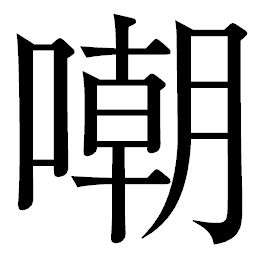
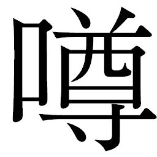
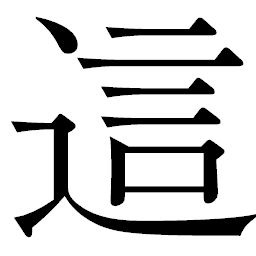
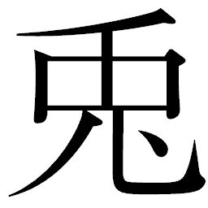
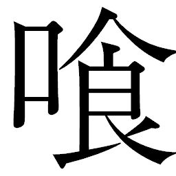

🏠
日
月
縦書き／横書き
 火はさらに増やされ、村全体を煌々と照らし出していた。警戒にあたる村人たちの目も、勝負は明日と見るカンベエらの言葉のもと、引き締まって見えた。
火はさらに増やされ、村全体を煌々と照らし出していた。警戒にあたる村人たちの目も、勝負は明日と見るカンベエらの言葉のもと、引き締まって見えた。
| 〔小説〕SAMURAI7 第五巻 | |
| 冨岡淳広 | |
この本は縦書きでレイアウトされています。
また、ご覧になる機種により、表示の差が認められることがあります。
制作協力......株式会社ゴンゾ 笠間寿高
企画協力......深谷精一
第十七章 暴れる！
強
襲
揚
陸
艦
は濃密に漂う霧の海に沈んでいき、村人たちからは見えなくなった。
その移動のさなか、米は米蔵に安置され、捕らえられたゴロベエ、キュウゾウ、カツシロウは後ろ手に縛られたまま、空間わずか三畳ほどの牢に放り込まれた。かつては武器庫だったが、改造して人間数人を収容できる牢を複数作っているのだ。乱暴に押し込められ、縛られた不自由な体を起こしながら、ゴロベエは牢内に染み込んだ匂いを敏感に感じ取った。
土埃に混ざった甘い汗の匂い。まぎれもなく、ここに攫
われた女たちが収容されていたことを察した。もしかするとリキチの女房もこの中に入ったのかもしれない。別れ際に見たリキチの祈るような目を思い出し、ゴロベエは表情をあらためて、険
しく四方の壁を見渡した。捕まった三人は、一人に一つずつの入牢となっている。窓はない。唯一、外と接触できるのは通路に面して扉を兼ねた鉄
格
子
だけだ。鉄格子にもたれて可能な限り通路の外を見ると、見張りは通路の両端に一人ずつ。
自分の牢の右にはカツシロウが収容され、さらにその向こうにはキュウゾウが入っている。
「本日、第二幕だな」
厚い脣が、思わず笑みを刻んだ。敵に囚
われるという経験はなかったが、だからこそこの"初体験"にゴロベエはぞくぞくとした興奮を覚えた。
濃霧に潜行した途端にカンナ村入り口の方へと左旋回する強襲揚陸艦の内部では、野伏せりたちに連行されたキララが指令所へと通されていた。普段の青い作業着の上に白い巫
女
の衣装をまとったままではあったが、ここに来るまでに男たちによって念のために武器の所在をあらためられていた。
はじめて乗る強襲揚陸艦の揺れにキララが覚
束
ない足取りでよろめくと、左右で腕をとった野伏せりたちは鼻で笑った。
「どうした、怖いか」
「怖かろうよ。村はいわば己
の陣。いかに毅然にふるまおうとも、ここは我らが敵地。逃げることも叶わぬからな」
遠慮のない視線を向けてくる野伏せりたちを、キララは睨
みつけた。
敵地に、一人。恐怖がないといえば、嘘になる。それでもキララは、カンベエたちを信じていた。必ずこの野伏せりどもを打ち破ってくれる、と。
指令所は巨大な紅
蜘
蛛
や雷
電
に合わせた広大なドーム状である。戦時中は作戦のブリーフィングや降下作戦前の待機所を兼任していた所だ。カンナ村の村人が「大目玉」と呼ぶ、センサーを内蔵した二つの丸いハッチの裏側にあたり、かつてはここから、機械のサムライが降下作戦に飛び出していったものである。
あくまでも輸送船であるため鋼鉄の壁に余計な突起物はなく、シンプルな構造で、壁のあちこちに装備品を収容する棚が設置されていた。天井や上部の壁に据えつけられた照明が、室内に待機したシュウサイやソウベエを鈍
色
に照らし出し、キララや人間の野伏せりに覆いかぶさるような影を作っていた。
キララの目に真っ先に飛び込んできたのは、室内に垂れ下がった鎖に吊り下げられた、キクチヨの首だった。
斬首後の首級
のごとく白布にくるまれて鎖の鉤爪に引っかけられているのである。強襲揚陸艦の動きにつれて右に左にと力なく揺れるさまには何の意志もなく、ゴーグルのシャッターは瞼が閉じているように下りていて、まさしくただの首でしかなかった。
その向こうにそびえ立つように、シュウサイとソウベエがいた。彼らの足元には生身の野伏せりたちが警護役として居並んでいる。男たちの中には腕や目を機械に変えている者もいて、冷ややかな視線をキララに送っていた。
「娘よ。村をおのれ一人で守ったと誇りたいところに水を差すようだがな」
ソウベエの声には
るような響きがあった。何を言われたのかわからず戸
惑
って瞳を揺らすキララに、さらに追い討ちをかけるように、彼は言った。
「お前はこれから、都にのぼる」
「都!?
」
キララの瞳に、はじめて動揺が走った。
にだけは聞いた場所。
長い長い大戦の間、軍需産業を支える裏方に徹しながら力を蓄え、ついには大戦を終息に追い込んだ勢力、アキンド。それは長きにわたる戦乱に対する庶民の義憤からではなく、サムライから支配権を奪取するためのものでしかなかった。
都とは、戦後に各地でアキンドたちが築きあげた彼らの居城であると本で読んだ。カンナ村のような一地方にはその影響はないものと思っていたし、まして野伏せりは「野盗」、支配勢力との連携など想像もしていなかった。
「何を驚いておる。さては、今まで攫った女どもがここにいると思うたか？ 米も女も、すべて都が所
望
しておるのだ」
ソウベエは溜
飲
を下げるかのように言った。村では毅然としていたキララが戸惑うさまが可
笑
しいのか、押し潰すように前屈みになり、威圧的な声をあげた。
「今までに連れていった女の人たちは、みんな都にいるのですか」
「左様、感謝しておるわ。肥臭いだけの百姓の生活なんぞ捨てて、満たされておるからの」
「家族と引き離されて、どうして満たされているといえるのです！」
「おのが身でわかる事となろう」
シュウサイが割って入った。調子に乗ったソウベエが余計なことを言わないかと案じたのだ。ソウベエはまだキララに舌
鋒
を浴びせたかったようだが、シュウサイの目を見て口をつぐんだ。
シュウサイは野伏せりたちに頷
いた。すると、彼らのうち数人が、大目玉裏側横に取り付けられた複数のレバーを、息を合わせて引き下げた。油圧が稼働し、大目玉を開きはじめた。降下作戦さながらに、二つの目玉が開き、外からの濃霧がどっと流れこんできた。
キララは突風に長い髪を乱されながら、霧の向こうに見え隠れする外の景色に目を凝らした。強襲揚陸艦は村の入り口にまで来ていたようだ。燃え落ちて断崖につり下がったままの橋の残骸が見えた。何をするのかと惑い、シュウサイを振り返る。
「浮上せよ」
シュウサイの号令に合わせ、強襲揚陸艦の上昇が始まった。急激な機動と圧力にキララの五感が不安定に揺らぎ、激しい耳鳴りに襲われた。反射的に、体を強
張
らせた。霧がうねっては指令所の中に消えていく。おそろしいことが起こるのでは、と心がざわめいた。戸
惑
いは怯
えに変わり、周囲の野伏せりたちの動向を見ようともがくように首を動かした。
男たちは、装備品を収容した扉を次々に開くと弓と矢を取り出し、さらに榴
弾
した。慣れた動作で矢尻に榴弾をはめ込んでいく。戦時中の長距離攻撃に使用されていた矢榴弾である。彼らは弓に矢榴弾を番
えながら、大目玉の縁
に並んだ。上昇するに従って、景色は村を俯
瞰
するようになっていく。
キララは、背筋に不快な汗が伝わり、心臓が強く締めつけられるような錯覚を覚え、搾り出すようにシュウサイに向かって叫んでいた。
「何をするおつもりですか！」
「村も見納めだ。我らを愚
弄
したカンナ村の最
期
となろう」
「それでは約束は違います。私の命と引き換えにすると仰
ったではありませんか！」
「はて、命を貰い受けると言ったまでだが」
「それでもサムライですか！」
「サムライなど、過去の遺物よ」
シュウサイは吐き捨てるように言い切った。野伏せりに身を落とし、アキンドに仕える身となって、それでも生きているのは"命令を受け、それを仕事としてこなす"以外にこの時代と添う術
を見出せなかったからだ。主がアキンドといえど、命令をこなしている間はサムライでいられる。
唾
棄
するようなシュウサイの言い草に、キララは言葉の裏に潜んだ複雑な乱れを感じ取った。それでも彼女は、腕をとる野伏せりたちを振りきるような勢いで何度も訴えかけてきた。
「おやめ下さい！ 野伏せり様！ 野伏せり様！」
吹き込んでくる強風が吊り下げられたキクチヨの首を激しく揺らすなか、ゴーグルのシャッターが開いたことに誰一人気づく者はいなかった。
その瞬間、米蔵に安置された米俵からキクチヨの腕が突き出した。体を埋めた米粒を外にあふれさせながら、キクチヨは首のない体のまま、米俵を脱ぎ捨てるようにして外に出てきた。他の三つの米俵からも、刃
が次々に突き出され、編み上げた藁
を切り裂いて男たちが出てきた。
カンベエ、シチロージ、ヘイハチ。男たちは米俵の中に米ごと入り、まんまと強襲揚陸艦への侵入を果たしたのである。
ヘイハチは手袋をとって小指を耳に突っ込み、中に転がり込んだ米粒をほじくり出しながらも笑顔いっぱいだ。
「いやあ、米になった気分でしたよ」
「米好きヘイさんとしちゃ、クセになりそで怖い......、でげしょ？」
「御明察」
刀を に収めながら言ったヘイハチは、もう片方の手袋もとると、落ちている米粒を素手ですくいあげた。
に収めながら言ったヘイハチは、もう片方の手袋もとると、落ちている米粒を素手ですくいあげた。
に収めながら言ったヘイハチは、もう片方の手袋もとると、落ちている米粒を素手ですくいあげた。「古
々
米
とは言え、もったいないですね」
「うむ......、百姓たちには、すまぬことをした」
カンベエも、滝のように流れこぼれる米の波を刺青の入った手で受けとめた。たちまち掌
からこぼれ落ちた米が、床に落ちて跳ね飛んだ。米を見つめながら動かないカンベエの背を、シチロージとヘイハチは不思議そうに見ている。
「カンベエ様、どうなさったので」
「いや......」
と、言葉を濁
した。その眼差
しは、限りなく穏やかだった。野伏せりに勝利するためとはいえ、サムライに米を食わせ、こうして作戦のために米を供出してくれる百姓たちの執念を、カンベエは掌を叩く米の感触を受けながら思い馳
せていた。
この戦
、なんとしても勝たねばならぬ。
カンベエは米を握りしめるように手を閉じた。顔を上げ、仲間たちを振り返った。
「ヘイハチ、おぬしは機関部を」
「承知しました」
ヘイハチは気をつけをして頭を下げた。
「シチロージ、キクチヨ。参るぞ」
「承知」
シチロージは肩に槍
を担ぎ、首がないため声を発することが出来ないキクチヨは両腕に力こぶを作るような動きで、了解の合図とした。
扉の前に立ったカンベエは刀を構え、目を閉じて精神を集中した。刀身がふるえ、空気が唸る微
かな音が鍔
鳴りのように米蔵に響き渡った。超振動が刃にサムライの力を与えていく。一定の音波となったふるえが続く中、目を開けたカンベエは分厚い扉に銀光の一
閃
を浴びせた。
鋼鉄の扉が両断された。通路側に倒れる扉の音を聞きつけて、完全に油断していた野伏せりたちが慌
てて駆けてきた。
狭い通路に飛び出してきたカンベエたちを見た彼らは、信じられないものを見たかのように動転し、それぞれ抜刀した。
「貴様らッ！」
怒号とともに斬り込んでくる野伏せりたちにカンベエも下段に構え、待ち受ける。その頭上に、鋭い空気が流れた。背後からいきりたつ闘気を感じ取ったカンベエは正眼で野伏せりを見据えつつ、不敵な笑みを刻んで腰を落した。
絶妙の間合いでカンベエの体を越えて、槍の切っ先が野伏せりめがけて突き出され、床を抉
るように突き刺さった。シチロージが槍を一気に伸ばしたのだ。
「一番槍！ いただきまァッす！」
シチロージ跳躍！
カンベエの頭上を槍を使って飛び越えたシチロージの声は弾み、野伏せりたちの真
っ只
中
に躍
り込むと長大なリーチを活かして突き、斬り払い、叩き伏せた。
棒術さながらに後ろの野伏せりの腹を突いて怯
ませると、正面の野伏せりの喉を掻
き切った。噴出する返り血を翻
ってかわし、槍を旋回する勢いで後ろの野伏せりの剣を打ち払い、肩口から刃を振り下ろして斬り伏せた。
異変を聞き取った野伏せりたちがさらに数人、襲いかかってきた。残心解くことなくシチロージは槍を突き出し、牽制をかけつつ突っ込んだ。三方から同時に斬り込まれようとも、槍の間合いに一歩も近づけなかったが、野伏せりは狭い通路の壁を利用して三角跳び、真上からシチロージに斬りかかってきた。
一瞬、注意を空にそらされたシチロージが体勢を立て直すわずかな間は、野伏せりにとって勝機だった。ところが、黒い影がシチロージを覆うように野伏せりの視界を奪う。カンベエも壁を蹴って跳躍、シチロージの楯になるようにして男の前に飛び出した。空中で斬り結んだ二人だが、着地して立っていられたのはカンベエだけだ。男は腹を水平に斬られ、血反
吐
を吐いて倒れた。
「シュウサイ様に報告を！」
野伏せりの一人が怒鳴った。一人が慌てて踵
を返す。
「シチ！」
「承知！」
カンベエの号令に、シチロージは槍を逆手に持ち替え、投
擲
した。背を向けた野伏せりは背中を貫かれ、そのまま突っ伏した。手ぶらになったシチロージに、野伏せりが斬りかかる。シチロージは左手の義手からワイヤーを打ち出し、刀を持った右腕をからめとる。バランスを崩した野伏せりの鳩
尾
に蹴りを浴びせ、ワイヤーを操って引き倒すと、刀を奪い取って胸を突いた。
残る野伏せりたちが斬り込んできた。カンベエ、シチロージが斬り結ぶ中、首なしのキクチヨが轟
然
と野伏せりの顔面に鋼鉄の拳を叩きつけた。前歯を粉砕された野伏せりは怯み、力が抜けた。キクチヨはすかさず刀を奪い取り、男の腹を突いた。
「ヘイハチ、いけ！」
「参ります！」
ヘイハチはカンベエに敬礼し、折り重なって呻
く野伏せりたちをひょいひょいと跳びこえて通路の奥へと駆けていった。強襲揚陸艦の構造を心得ているヘイハチは、機関部のある下層へと向かったのである。
シチロージは絶命した野伏せりの背から槍を引き抜いた。
「カンベエ様、我らも」
シチロージに促
されたカンベエは頷
き、斃
れた野伏せりの腕から刀を奪って腰に差した。刃こぼれしたり折れたときの用心だ。シチロージも同様に一本拾うと腰に差し、キクチヨも持てるだけ持った。
キクチヨは大太刀を村に残してきていた。伸縮自在なシチロージの槍と違って身の丈ほどの巨大な刀は米俵に仕込むには大きすぎた。
作戦をカンベエから聞いたとき、キクチヨは自分の刀を持っていくことにこだわった。ところがカンベエは、にべもなくそれを却下していた。
「刀なら、野伏せりが持っている」
キクチヨも、そして拘束される芝居をうつ役目のために刀を残していかざるをえないカツシロウも、この言葉に一瞬呆
気
にとられたものである。
刀はサムライの魂。そう教えられてきたカツシロウ、サムライというカタチにこだわってきたキクチヨ。そんな二人にカンベエは、戦うための武器ならどこにでもあり、道具に意味をもたせることなく人を殺してこそのサムライ、と言い切ったのだ。
とんでもない男だ、とキクチヨは面白がり、この策に乗った。カツシロウはせっかくマサムネが打ってくれた刀だというのに、と不服そうな顔を浮かべたものの、カンベエに従ったのだった。
ゴロベエたちが収容されている牢では、看守役の野伏せりが勝ち誇ったように鉄格子の前に立ち、煙草を吸ってみせていた。
「まったく、貧乏くじを引いたものよな、おぬしらも」
る男は、煙草の煙を鉄格子ごしに牢内に吹き込んだ。まともに煙を顔に受けながら、ゴロベエは微動だにしない。
「百姓に手を貸したばかりに、これで一巻の終わりよ。聞くところによると、おぬしらの報酬はめしだそうだな。くだらぬ仕事を受けたものだ」
「貧乏くじかどうか、試してみぬか」
ゴロベエは不敵に笑ってみせた。
「なんだと？」
「おぬし、 けをせぬか。某
がこの縛
めから、見事縄
脱
けできるかどうか。どうせ明日なきこの身よ、しくじったらその刀で突いてかまわん」
けをせぬか。某
がこの縛
めから、見事縄
脱
けできるかどうか。どうせ明日なきこの身よ、しくじったらその刀で突いてかまわん」
けをせぬか。某
がこの縛
めから、見事縄
脱
けできるかどうか。どうせ明日なきこの身よ、しくじったらその刀で突いてかまわん」「出来たらどうする。まさか逃がせというのではあるまいな」
「そう言いたいところだが、そうもいくまい。某は命をくれてやってもよいが、連れてきた娘は解放してはくれまいか」
「ばかなことを。頭
目
が承認するわけがなかろう」
野伏せりの男はさらに一歩進んだ。ゴロベエはこの距離を待っていた。男が煙草を思いきり吸い込み、煙を吹きかけてくる動作の間に、手首と肩の関節をたやすく外して縄脱けを決めてみせたのだ。骨の軋
む音と足元に落ちた縄に、完全に不意をつかれた男が慌てて抜刀しようとした瞬間、鉄格子の間からゴロベエは太い腕を突き出していた。
ゴロベエは素手で男の喉笛をつかみ、力任せに首の骨を折った。声を立てることも出来ずにその場に崩れた野伏せりから、ゴロベエは鍵束を奪い取った。
「さて......、命、売りましょか」
ゴロベエは鍵を外すと、通路に出た。斃れた野伏せりから刀も奪いとった。
隣の牢を見ると、カツシロウが縄を外そうと後ろ手の不自由な体をもぞもぞと動かしているところだった。隣でゴロベエがやっていた音が聞こえていたのであろう、表情には焦りの色が浮かび、汗が滴
っているものの、縄が外れる気配は一向にない。
「なんだ、縄脱けは出来んのか」
「大道芸は習っておりません」
当たり前のようにゴロベエに言われ、カツシロウは憤然と横を向いた。苦笑いしながらゴロベエがキュウゾウの牢を見ると、こちらはすでに縄を解き、静かに座っていた。相変わらず伏し目がちの眠そうな目つきで、ゴロベエを見ようともしない。
あまりにも対照的な二人に、ゴロベエは嘆息した。
「埋まらんな、この差は......」
巨大な顔に見える強襲揚陸艦の機関部は、大目玉の下に二本伸びた脚のような部位に左右二基取り付けられている。ヘイハチが向かったのは右の脚部で、螺
旋
階段を駆け降りた先が、機関部だ。狭い内部通路は、整備以外で人が入ることはほとんどない。内部では、推進機関となる歯車を動かすための数基の振り子が規則正しく揺れていた。微かな機械油の匂いが、ヘイハチの鼻をついた。
ヘイハチを見咎
めた警備の野伏せりが斬りかかってくる。抜刀したヘイハチは、敵の攻撃をかいくぐって制御盤横の伝声管に飛びついた野伏せりに真っ先に襲いかかった。一人倒して、伝声管の前に立ちはだかって他への伝達を阻
んだヘイハチは、上段から振り下ろす薪
割
流で野伏せりたちを次々に斬り伏せていった。刃
の動きはヘイハチにはおそろしく緩慢に見えた。砂漠で野伏せりを斬ってからというもの、戦場での意識が変わっていた。
確実に息の根を止めたことを見届けて、ヘイハチは制御盤にとりかかった。課せられた任務は操縦と機関停止。機体のコントロールをこちらにして、つばさ岩近くまで引き上げた後、片方の機関を止めて片肺飛行にするのだ。船体は傾斜し、艦内の足場はまともに立っていられなくなる。そうして敵が浮足だっている間に、野伏せりたちを斬ろうという策だった。
はじめて触れる機械ではあったが、構造を見て機関を止めるにはどうすればいいか、ヘイハチはたちどころに見抜いた。
ただちにスイッチの一つに手をかけたとき、忍び寄ってくる気配にヘイハチの動きが止まった。まだ、野伏せりがいたのだ。音もなく近づいてきた野伏せりだったが、抜刀していきりたつ呼吸までは隠しきれなったようだ。
ヘイハチは背中から男の息遣いを感じ取り、刀をふりあげて空気が動くのを感じると、反撃ではなく、身を屈めて床に尻
をついた。男が振り下ろした刀は制御盤に叩きつけられ、分断されたシステムは火花を散らした。ヘイハチは屈んだまま抜刀し、男の腹を突いた。傷口を広げるように刃をひねると、男は血の泡を口の端から滴
らせ、呻
きながらくずおれた。
頰を膨
らませて息をついたヘイハチは、瞳孔の開きはじめた男の下から
い出ると、制御盤から男を引きはがし、床にうち捨てた。火花を散らす制御盤の計器類を見渡す。今の一撃は、片肺飛行にするどころか機関の電気系統に大きなダメージを与えたようで、いくつかの計器の針が振り切れていた。
「参りましたね、これは」
振り子の動きも不規則になっている。予想以上に早く墜落してしまう危険性が出てきた。ヘイハチは火花の飛び散る制御盤に張りつき、与えられた任務をこなすためにレバーを引き下げ、スイッチを押しはじめた。
機関の不規則な機動は、艦全体に微震動となって広がった。カンナ村を攻撃しようとしていたシュウサイたちだったが、揺れる足場に矢榴弾の狙いをつけるどころではなくなった。
「頭目、機関に異常！ 制御できません！」
制御盤に飛びついた野伏せりがシュウサイを振り返り、叫んだ。
素早く伝声管に向かったソウベエが部下たちに怒鳴った。
「機関！ 応答せよ、機関！」
機関に詰めていた野伏せりからの応答は無論、ない。下ではヘイハチが、焦るソウベエの声を聞き流しながら制御作業をしているはずだ。
「下りて見てこい」
ソウベエは野伏せりたちに矢継ぎ早に命令した。矢榴弾を置いた野伏せりの二人が、ただちに階下への出入り口へと駆け出した。しかし、彼らは下りることが出来なかった。階下から乱入してきたゴロベエが、二人を瞬時に叩き斬っていたのである。
「サムライか！」
シュウサイが吼
えた。
腕をとられたままのキララが、その言葉に出入り口を見やる。ゴロベエはキララと目を合わせ、安心させるように微かに頷
いた。
続いて階下からそのまま駆け上がってきたキュウゾウとカツシロウは、まだ刀を持っていない。ゴロベエは飛び込んでくるなり、野伏せりたちの斬
撃
をかわしざま次々と斬っていく。
キュウゾウも、相手の懐に飛び込み腕を摑んで引き寄せると、肘打ちを胸に叩きつけて怯
ませた拍子に刀を奪いとった。利き腕の左腕で摑んだ刀を一
閃
すると、斬りかかってきた野伏せりの腹を斬った。のけぞった野伏せりの腕から、右手で刀を奪うと体を旋回させ、大きく両腕を開いて刀を突き出し、相手を牽
制
した。瞬
き一つする間にたちまち二刀流に変わったキュウゾウに、野伏せりたちは怯み、構えたまま二の足を踏んだ。
戦闘態勢を整えたキュウゾウの鮮やかな剣技は、カツシロウの奮起を促した。襲いかかってくる野伏せりの刃をかいくぐり、足払いをかけると剣とともに突き出された腕を両手で摑んだ。刀を奪うことに夢中で背中の注意が疎
かになる。斬ってくれといわんばかりの彼の背に、野伏せりが容赦なく斬り込む。
「カツシロウ！」
ゴロベエが叫び、援護に回ろうとした。しかし声に促されたカツシロウは、振り向きざまに後ろの敵をなぎはらい、怯ませて一歩下がらせた。刀を手にした瞬間、カツシロウは自分の体に力が漲
るのを感じた。まるで敵を見据えるかのようにゴロベエを視界に捉えると、吼
えた。
「手出し無用！」
「ほぉ。その意気だ！」
ゴロベエは発
破
をかけつつ、自分に斬りかかってくる野伏せりを斬り捨てた。
カツシロウは刀の柄
を、両手でしっかりと握りしめた。肩を上下させる激しく浅い呼吸を繰り返しながら、群がってくる野伏せりたちに向かって斬り込んでいった。
私とて、サムライだ――。
己を鼓
舞
する怒号とともに、野伏せりと斬り結ぶ。飛び散る血飛沫
が視界を赤く染めた。すぐそばで、キュウゾウとゴロベエが淡々と敵を討っている音が聞こえる。負けていられない、と刀をふるう。両足を踏ん張って腰を落とし、敵の剣を受けとめる。刃がぶつかりあう衝撃も、野伏せりの鎧
を叩き斬って傷を与える手応えも、あの 痛
となって刀を通じて馴
染
んでくる。
痛
となって刀を通じて馴
染
んでくる。
痛
となって刀を通じて馴
染
んでくる。 激痛に歯を食いしばりながらも、野伏せりもカツシロウに斬りかかってきた。カツシロウの頰を刃がかすめ、鋭い痛みが五感を支配した。その瞬間、カツシロウの
痛は消し飛び、瞬
きと共に視界を覆っていた血飛沫の赤が消えた。見えるのは、野伏せりたちが持つ刀の反射光。そして、自分を見つめてくるキララの瞳。
痛は消し飛び、瞬
きと共に視界を覆っていた血飛沫の赤が消えた。見えるのは、野伏せりたちが持つ刀の反射光。そして、自分を見つめてくるキララの瞳。 これは、戦
だ。人を斬ることに揺れていては、守るものも守れない。そう肚
を据えたとき、カツシロウの脳裏で何かが弾けた。
一の太刀で、弾けたものが
痛とわかった。頭の中が澄みきって、今まで濁った音でしかなかった刃の交差が、はっきりと伝わってきた。
痛とわかった。頭の中が澄みきって、今まで濁った音でしかなかった刃の交差が、はっきりと伝わってきた。 二の太刀で、それまで夢うつつといってもいいほどだった斬撃の手応えが心地よく心に響いた。
三の太刀で、斬られた野伏せりが発するくぐもった悲鳴が耳についた。
もはやカツシロウは瞬きをしない。ひたすらに、野伏せりたちを斬っていく。砕かれていた自信が蘇ってきたかのようだった。野伏せりを斬り倒したカツシロウは、荒い息をしながらキララの腕を左右からとった野伏せりたちへ、血走った目を向けた。
「うおおおっ！」
今一度、カツシロウはキララを捕らえた野伏せりに威
嚇
するように、吼えた。
キララは鬼気迫る形相のカツシロウから、目を離すことが出来ない。血脂のついた刀はすでに刃こぼれし、光も鈍い。
ゴロベエが彼の意図を察してさりげなく後衛にまわった。
一直線に向かってくるカツシロウに、野伏せりたちはキララの喉元に刀を突きつけて威嚇する。カツシロウは牽制され、ようやく我に返った。頰にも血の気が戻り、どうすればキララを救い出せるか、混乱した頭で必死に考える。
「止まるな！」
背後から、ゴロベエがカツシロウを叱
咤
しつつ跳び出した。俊敏に壁を蹴って、宙を舞う。野伏せりの注意がゴロベエに逸
れたと思った瞬間、ゴロベエの体は野伏せりたちの背後にあった。振り返る間さえ与えず、ゴロベエは彼らを斬り倒していた。ようやく腕の拘束を解かれたキララが安 のあまりよろめいたのを、ゴロベエが腕をとった。
のあまりよろめいたのを、ゴロベエが腕をとった。
のあまりよろめいたのを、ゴロベエが腕をとった。「ありがとうございます、ゴロベエ様......」
緊張感から解かれ、かすれた声をあげるキララに、ゴロベエは力強く頷いてみせた。カツシロウは呆然と見ていたが、横から野伏せりに襲いかかられ、辛
うじてかわしざまに斬り伏せていた。
キュウゾウはカツシロウを視界の隅にとらえつつ、ソウベエに向かっていく。
「キュウゾウ！」
ソウベエは斬
艦
刀
の刃を振り出すとキュウゾウに斬りかかった。キュウゾウは二刀流を交差させて斬艦刀を受けとめる。鋼の軋
みが凄まじい衝撃波を起こすが、キュウゾウは無言でソウベエを睨
めつけた。脣の端だけを吊り上げて、冷笑を浮かべる。その笑みの意味をはかりかねて、ソウベエの斬艦刀に込めた力が微かに動いた。
キュウゾウの両手に力が漲った。この場で手に入れた軍刀は、たちまちキュウゾウの腕と一体化し、しなやかな振動を生みはじめた。交差した刃を強く押し出すと、斬艦刀の切っ先は切断され、宙を舞った。反動で揺らいだソウベエの眼前に、キュウゾウは跳躍するなり斬り込んだ。
だが、指令所内に重層的に銃声が反響する。キュウゾウめがけて、野伏せりたちは鉄砲を撃った。空気を裂く轟音に、キュウゾウは空中で体をひねって弾丸を斬り伏せ、ソウベエの足元に着地する。そこに、シュウサイが斬艦刀を振り下ろしてきた。
振り向きざまにキュウゾウが刀を向けたその前に、飛び込んできた影があった。階下から駆け上がってきたカンベエとシチロージが、呼吸を合わせてシュウサイの斬艦刀を叩き斬った。折れた切っ先を、最後に上がってきた首なしのキクチヨががっちりと受けとめた。
「おおーっ！ 待ってたぜ、カラダァ！」
吊られていたキクチヨの首がうれしそうに揺れると、体は切っ先を捨て、呑
気
に手を振って応じた。
カンベエは、キクチヨの首めがけて刀の一本を投げる。まっすぐに飛んだ刀はキクチヨの首を吊った鎖を断ちきり、首を真っ逆さまに落とした。落下しつつほどけた白布が舞う中、キクチヨの体は首を摑み、はめ込んだ。頭と胴に電流が走ると、戦闘態勢完了とばかり、奪ってきた刀を構えた。通常の刀はキクチヨの図体にはあまりに小さく、不似合いだ。それでも、刀を振り回して野伏せりたちに威嚇の視線を投げつける。
「オレ様合体！ かかってきやがれ！」
「カンベエ殿、キララ殿は某
が！」
カンベエはゴロベエの言葉に頷いてみせた。
「貴様らッ！ たばかりおったな！」
鋼の体を怒りに打ち震わせて、シュウサイは分断された斬艦刀を床に叩きつけるように捨て、肩のポッドから鉄砲を引き抜いた。
「雷電隊！」
シュウサイの大号令のもと、床のハッチが跳ね上がり、数体の雷電型が飛び出してきた。鉄砲を抜くもの、刃をふるうもの、指令所の中は一気に混戦状態に突入した。
カンベエたちは呼吸を合わせたかのように、散った。
サムライたちは弾幕をかいくぐり、雷電隊に斬り込んでいった。キクチヨは銃弾を浴びて「いてててて！」とわめきながらも、おかまいなしに敵を殴り倒していく。
カンベエが斬り、シチロージが突き、キュウゾウが舞い、キクチヨが叩き、カツシロウが吼えた。
斬るたびに、カツシロウは高揚を抑えきれない。斬撃の手応えが彼の血を滾
らせる。目を見開き、口で呼吸する彼に比べ、真一文字に脣を結び伏し目がちなまま表情の変わらないキュウゾウは、あまりに対照的だ。
血糊で足を滑らせ、あやうく斬られかかるカツシロウに、カンベエが躍り込んで敵の剣を跳ねのけ、胸を突いた。間髪入れず、銃撃がカツシロウの背後から響いた。反射的に首をすくめ、目をつぶった彼は熱くなりすぎた精神に一気に冷水を浴びせられたような不快さを感じた。
目の前では、カンベエの白い上着の左腕が裂け、血に染まっていくのが見えた。銃弾はカンベエの腕をかすめたのだ。
カンベエが撃たれ、反動でよろめいたのを見たカツシロウは、振り向きざまに鉄砲を持った野伏せりを殴り飛ばし、仰向けに倒れたところで喉を貫いていた。
「先生、大丈夫ですか！」
「儂
にかまうな！」
カンベエは白い衣服を血で染めつつも、動きをとめない。動いている限り、戦える。戦えるならば、相手を倒す。この数十年続けてきたことを、またやっているだけだ。振り乱した長くもつれた髪が幽鬼のように揺れ、脂汗の浮いた顔はどす黒く、目だけが獲物を求めて光る。
振り向いてカンベエの無事を確認したカツシロウも、初めて見るカンベエの横顔だった。戦場でしか見られない顔だ。
カンベエを振り向いたカツシロウに、新手が斬りかかる。気配で察したカツシロウは横っ飛びに転がってかわす。新手の肩をキクチヨがつかみ、袈
裟
懸
けに斬り倒した。
「おらおらおら、ボーッとしてンなよ、カツの字！」
斬り、傷つき、走り、撃たれ、男たちは返り血と機械油を浴びていく。それはすべて、凄まじいまでの生への渇望だった。キララの振り子はそれを鋭敏に感じ取り、波立つ光を放っている。ゴロベエはめざとく光に気づき、楽しげに笑った。恐怖を置き忘れてきた自分もまた、この生臭い場に歓喜の叫びをあげたくなるほどの興奮を覚えている。
キララも、初めて見る本物の「戦場」だった。銃撃の硝煙、斬撃の血飛沫、その中でカンベエたちは、街で会ったときよりも、旅をしていたときよりも、活き活きとして見えた。カンベエの腕を染める血の赤が、彼女の目を射る。その赤を見るうち我知らず力が入り、ゴロベエの腕に強くすがりついた。渇いた喉が焼けつくように痛かった。支えるゴロベエは、キララが凍りついたように動かないことに気づいた。自分の腕をつかんだ手が、異様に冷たくなっている。左腕の振り子が、淡い光を発して震えるように波立っていた。
「よく、見ておけ」
ゴロベエは短く、キララを促した。カツシロウが初めて人を斬ってからというもの、キララにも大きな変化が表われていることをゴロベエは知っている。そして、それ以上は何も言わない。
キララは見る。サムライたち一人ひとりの剣技と、簡単に散っていく野伏せりという名のサムライたちを。凄惨な光景は彼女の心を暗鬱にしていく。目をそらしたい、と頭では拒否しているのに、心の奥底から沸き上がってくるものが凝視させて離さなかった。
雷電型が次々に倒れていく中、ソウベエは吼えながら鉄砲を抜き放った。巨大な鉄砲をめがけて、キュウゾウが再び跳躍した。銃身を蹴って高く飛んだキュウゾウは、ソウベエの胸を叩っ斬って機械体の内部を切り抜けた。胸部を斬り抜けられたソウベエは火花散る体を痙
攣
のように震わせた。最後の力を振り絞って、鉄砲をキュウゾウに向けた。しかし引き金を引く力は残っていない。硬質な目玉から次第に光が消えていく。キュウゾウが背を向けると、ソウベエは巨木が崩れるようにして倒れていった。骸
と化したその体は、もはやただの機械でしかなく、床に激突した金属音が無機質に響いた。
シュウサイはソウベエが落とした鉄砲を拾った。
「おのれッ！」
狙いは誰でもよかった。密かに伝えられていた使命も、もうどうでもよい。サムライたちに一撃を浴びせなければならないのだ。シュウサイも、サムライ。勝つことが仕事の男である。怒りにまかせて、彼は引き金に指をかけた。弾け飛ぶ銃弾は、野伏せりと斬り合うカンベエに向かった。
銃弾の動きを背中で感じ取ったカンベエは野伏せりを斬り伏せた勢いのまま刀を背後にふるおうとする。その前に、シチロージが素早く突っ込んできた。槍を控え、左腕の義手で見切った弾丸を防いだ。
銃弾の爆発がシチロージの義手の装甲を歪
ませ、火花を散らした。爆風の煤
が彼の白い肌を薄く汚していく。それでも、彼は笑みを崩さなかった。体を突き抜けていく爆風の衝撃波を、味わっているかのようだ。
シチロージはカンベエを案じる言葉を吐かない。カンベエはシチロージの脇をすり抜けざま、一瞬、視線を交わす。それだけで、互いの無事を確認していた。
シュウサイが第二撃を放とうと構えた瞬間、強襲揚陸艦が爆発に大きく震えた。
機関部の爆発が始まったのである。強襲揚陸艦はヘイハチがどうにか制御をかけて村の真ん中での爆発だけは避け、鉄柵で囲った南側面にのたうつような動きで進んだ。もったのはそこまでで、右脚部は壊れかけたところに内圧が高まり、とうとう爆発に吹っ飛んだ。
消えたと思った「野伏せり様」が村の入り口付近から浮上してきたときに驚き、どうなることかと見守るしかなかった村人たちは、よたよたとぶざまな動きを見せたかと思うと爆発を起こしたのを見届けるなり、ワッと歓声をあげた。
広場に出てきたギサクは皺だらけの顔ににんまりと笑みを浮かべた。
リキチやコマチ、オカラたちも、ただ見上げて、内部で行なわれているであろうサムライたちの活躍を思っていた。
しかし彼らは、強襲揚陸艦に目を奪われるあまり、濃霧の中を数人の雷電型や紅蜘蛛型、鋼筒
や
跳
など、第一波を辛うじて生き残った地上部隊が援護に向かっているのに気づいていなかった。
極端な前傾姿勢になった強襲揚陸艦の中で、ソウベエの骸が床を滑り、シュウサイの足をすくった。バランスを崩したシュウサイは鉄砲を手にしたまま壁に激突する。サムライたちもまともに立っていられず、手近な支柱を摑んだ。
ソウベエや、斃
れた野伏せりたちは開け放たれたままの大目玉から次々に霧の海の中に落下していった。
シュウサイはすぐに体勢を建て直して踏みとどまると、鉄砲でサムライたちを 食
にしようと視線を定めた。焦点があったとき、刀を逆手に持ち替えたカンベエが突っ込んでくるのが見えた。
食
にしようと視線を定めた。焦点があったとき、刀を逆手に持ち替えたカンベエが突っ込んでくるのが見えた。
食
にしようと視線を定めた。焦点があったとき、刀を逆手に持ち替えたカンベエが突っ込んでくるのが見えた。 カンベエは、野伏せりから奪った刀を銃口に突き刺したのだ。シュウサイが引き金をかけたのはほぼ同時だった。撃鉄に叩き出された弾丸が、銃口内を押し込まれた刀と激突し、射出されることなく暴発した。装
填
されていた弾薬を巻き込んで誘爆を起こした鉄砲は紅
蓮
の爆発にシュウサイを弾きとばした。右の指を失ってシュウサイは倒れる。爆発の衝撃はシュウサイの半身を焼けただれさせ、鼻をつく煙を噴き上げていた。
強襲揚陸艦の前傾姿勢は、ぐらついて正位置に戻ったかと思いきや、今度はゆっくりと後ろに傾いた。もはや飛んでいるのが不思議なほどの軌道で、黒煙を噴き上げながら村の断崖の南斜面に沿ってゆっくりと落ちていく。大目玉から見えるのは、断崖の濡れた岩肌ばかりになってきた。
さらに大きな爆発が強襲揚陸艦を震わせた。下層部からの爆発が上層に立ち昇ってきたのだ。階下からヘイハチがようやく
い上がってきた。爆発との競争だったのであろう、汗と煤で汚れた顔で、息を切らせて血溜まりの中に転がりこんだ途端、階下から火柱が噴き上がり、床に亀裂が走った。
「皆さん、お早く！ 墜落しまぁッす！」
すかさず、カンベエは言った。
「シチロージ、活路を開け！」
「承知！」
シチロージは開放されたままの大目玉に向かって駆け出した。槍をさらに伸ばして大目玉の縁に橋渡しをして体を支え、目についた岩棚から太陽を求めて張り出した大木に向けて、左手の指先からワイヤーを飛ばした。
ワイヤーは大木にからみついた。シチロージは足を踏ん張り、力まかせに大木を手前に引きずり倒した。大木の上部に生い茂っていた緑ごと、大目玉の床に倒れこんできた。この木を丸木橋がわりに、脱出しようというのだ。
「キクさん、ちょいと押さえといてくれ」
「おうよ！」
シチロージの指示に、キクチヨは刀を放り出して大木の両手で抱えるように押さえ込んだ。その間も強襲揚陸艦の落下はゆっくりと進んでいる。ぐずぐずしてはいられなかった。
「皆、急げ！」
キララの肩を抱いたゴロベエがサムライたちに声をかけ、先に飛び出した。キュウゾウ、ヘイハチ、カツシロウが続く。根元から倒れた木が生えていた岩棚に、彼らはどうにか落ち着いた。
「旦那！」
気の急
いたシチロージが、カンベエを促した。
カンベエは動かない。倒れたシュウサイが、まだ攻撃しようという意志を持って必死に起き上がろうとしているからだ。
シュウサイは血と硝
煙
と煤とで汚れ、傷を負いながらなお超然と立っているカンベエを見つめた。提
げた刀から、血が滴
って落ちていくのを目で追いつつ、彼は吐き捨てた。
「この戦、まだ終わらぬぞ......。サムライめ！」
かたやアキンドに通じ、かたや百姓に通じた、雇い主の異なるサムライ二人。
カンベエの表情は吹き込んでくる突風に髪をなぶられて、シュウサイからははっきりと見えない。長い髪越しに見える口元は、陰惨な笑みが刻まれているようにシュウサイには見えた。
「いかにも、サムライだ」
低い声だが、待ち受けるシチロージとキクチヨにははっきりと聞こえた。
すでに岩棚に移り、案じるカツシロウやキララからも、幽玄に浮かびあがるカンベエの白い背が見えた。
「先生、早く！」
「カンベエ様！」
届かないのを承知で、若い二人は叫んだ。
強襲揚陸艦がさらに傾斜した途端、床が爆圧に膨れ上がり、赤黒い炎と黒煙が混じりあって天井をも貫いた。シュウサイは爆圧と炎の中に沈んだかに見えたが、まだ、怨
嗟
にかられた言葉にならない絶叫と腕の動きがカンベエには見えた。
カンベエは虚無的に目を伏せ、シュウサイに背を向けた。血脂のついた刀を提げたまま、キクチヨの押さえる大木に駆け上がった。
「待たせたな。すまぬ」
「遅せぇンだよ、カンベエ！」
「よし、行きまっせ！」
カンベエを送り出して、シチロージは槍を縮め、大木を駆け上がる。キクチヨが続くが、支えを失い落下するに任せた強襲揚陸艦から岩棚に移るには、時間との戦いになっていた。
「キクさん、摑まれ！」
「おうよ！」
シチロージは槍を伸ばして、岩に突き立てる。キクチヨが槍を摑んで、しなる反動を利用して岩棚に飛びついた。
瞬間、足場にしていた大木が強襲揚陸艦もろとも落ちていった。
「うわたたたたた！」
「あぶねえ！」
足場を失い、思わずじたばたするシチロージの襟首を、キクチヨが岩棚から手を伸ばし、摑んだ。
「ありゃりゃ、こいつはすまねえ......」
落下する強襲揚陸艦は黒煙と爆発に沈み、霧の海を激しくかき乱した。大爆発に伴う巨大な爆煙と轟音が、凄まじい熱量と爆風とともに噴き上がってきた。
カンベエたちは岩棚に出来るだけ下がり、熱風を避けた。
キクチヨに吊られたシチロージは、全員を離脱させた勇ましさとは打って変って、情けなくも肩を落としていた。
「とほほ。最後にこのザマたぁ、このシチさんもヤキが廻ったってことでげすかねェ？」
「トシとったってことじゃねえのか？ イヤなら放すぜ？」
「おっとととと！ いけずはなしですよぉ！」
珍しく優位なキクチヨの悪戯
な口ぶりに、シチロージも軽く返す。つい先刻まで、血なまぐさい戦闘をしていたとは思えないほどカラリとしている二人のやりとりを、カツシロウとキララは奇異なものに感じていた。
キララは、張り詰めていたものが切れ、その場にしゃがみこんだ。急激に喉が渇き、眩暈
さえ起こった。いまだ、霧の底から地鳴りのように聞こえてくる強襲揚陸艦爆沈の轟音が、抑え込んでいた恐怖を表に沸き上がらせてきたのだ。振り子の光が激しく明滅していることで、彼女の恐れは誰の目にも明らかだった。
カツシロウが案じて、キララのそばに屈みこむ。
「大丈夫です、カツシロウ様。大丈夫......」
顔を上げてカツシロウを見たキララは、それだけ言うのがやっとだった。二の句が告げなかったのだ。カツシロウの顔は返り血と汗で凄惨な顔になりながら、目だけが異様なほどに精気を漲らせ、キララの不安をかき立てた。息が弾んでいるのは戦いに疲れているせいだけではない。彼は、これまでになく高揚しているのだ。こんなカツシロウを、キララは見たことがなかった。
「カツシロウ様、血が......」
キララは、カツシロウを支配する、憑
かれたような血の匂いを少しでも消しとろうと、巫
女
装
束
の懐から手
拭
いを出した。
「いや、私はいい。手当てなら先生を」
カツシロウは毅然と言い放った。キララは困惑の表情を浮かべたものの、頷いてカンベエのもとに歩み寄った。
不安をあらわす言葉が見つからないキララの表情を、カンベエは安心させるように力強い瞳で受けとめ、彼女の肩越しに自分を見据えてくるカツシロウを見やった。
カツシロウは、返り血が固まって強
張
る顔を、乱暴に掌で拭った。そのときはじめて、自分の掌についた赤い血を意識した。そしてカンベエの視線に気づき、見つめ返した。その目に揺らぎはない。カンベエも厳然と見た。カツシロウは今、斬り抜けてここにいる。たとえ血に汚れていようと、生きている自分を師と仰いだ男に見て欲しかった。
カツシロウが一つの山を越えたことは、カンベエだけでなく、ゴロベエら他のサムライたちにも伝わってきた。そして誰もが、キクチヨでさえ思う。この山を越えたら、後は転がるだけ。どこに堕ちていくかは、カツシロウ次第なのだ。
カンベエはキララに視線を戻した。彼女に向けた視線は、野伏せりをたばかる役目を無事にやり遂げたことへのいたわりに満ちていた。
キララの振り子は、いつの間にか明滅が収まって淡い光をたたえている。白い手
拭
いを、血の滲んだカンベエの腕に縛った。
第十八章 備えよ！
シチロージのワイヤーなくして、岩棚から村への急斜面を登ることは出来なかったであろう。岩棚から岩棚へ、巧みに場を移しながら、七人のサムライとキララは村へ急いでいた。
霧の海のはるか下方から、赤黒い爆煙が立ち昇り続けている。強襲揚陸艦に乗った野伏せりたちは、これで全滅したかに見えた――。
だが、彼らのいた岩棚に、霧の中から銃撃が浴びせられた。
断崖が抉
りとられたかのように破砕され、岩場を登りはじめようとしたキクチヨは驚くあまり尻
をついた。
「なんだァ!?
」
銃撃は再び響く。眼下に目をこらし、気配を感じ取ろうとしても霧をうまく利用し、位置をとらえることは出来ない。刀と違って遠距離攻撃に優れた鉄砲ならではの戦い方で、野伏せりたちがまだ生きていることを証明するように、銃撃は何度も繰り返された。
岩棚に伏せたカンベエたちは身じろぎもせず、濃
霧
をかき乱して反響する銃声が轟く中、息を潜めて銃声がやむのを待った。
「あいつら、まだやる気かよ」
反響音が消え去ると、キクチヨは悪態をついた。
「カンベエ殿、あれで終わりとは某
も思えぬ。第一波の生き残りもいるはず。まだまだこの戦
、あとを引きそうだ」
伏せたまま言うゴロベエに、カンベエも頷いた。その隣で伏せたシチロージも、カンベエに言った。
「しかし厄
介
ですよ、鉄砲は。この霧ではどこから撃ってきてるのか皆目わかりません。どうします」
「斥
候
を立てる」
立ち上がりながらカンベエは言った。すると、胸を叩いてキクチヨが名乗り出た。
「斥候なら、オレ様に任せてくれでござる！」
「お前では目立つ」
カンベエはキクチヨのやる気を十分に理解しながらも、断る。斥候はただ見てくればいいというものではない。相手に気取られず情報を集めてくるような繊細な仕事では、キクチヨの無鉄砲ぶりが逆に彼を窮地に追い込まないとも限らない。
「そんなにはっきり言うこたぁねえだろよ！」
「いきるないきるな、おぬしの役目は他にいくらでもあるだろう」
ゴロベエはキクチヨの肩を叩いてフォローにまわった。しかしキクチヨ以上に、戦闘の高揚感をひきずったままの若者がカンベエの前に進み出た。
「先生、斥候なら私が！」
カツシロウの耳には、まだ強襲揚陸艦内で斬り結ぶ刃の音が反響して離れない。そして今の、銃声。岩場を登っているうちに一度は冷めかけた昂
りが、まだ戦場から離れたくないとばかりに彼を突き動かしていた。
カンベエが返答する前に、カツシロウの前に音もなく立ちはだかったのはキュウゾウだった。何の感情の抑揚ももたない瞳は強烈な圧力となってカツシロウを突き刺し、牽
制
した。
「死ぬぞ」
押し殺した低い声と短い言葉は、カツシロウの昂ぶりに冷水を浴びせた。その場で動揺のあまり硬直したカツシロウに、もはや興味をなくしたかのように顔をそむけたキュウゾウは、肩越しにカンベエを振り返った。
「俺が」
カンベエは全幅の信頼を瞳に滲ませて無言のまま頷いた。キュウゾウも無言で頷き返すと、一瞬、カツシロウを見やり、二本の刀を引っ提げたまま一気に斜面を滑りおりていった。
カツシロウは息を呑んだ。キュウゾウは自分を拒絶したわけではない。未熟と叩き伏せたわけでもない。いまこの場で、戦に勝つために誰が斥候として起つのが適任なのか、瞬時に判断しただけだ。だからゴロベエもシチロージもヘイハチも、黙って送り出したのだ。
砂漠からカンナ村への道行きでキュウゾウヘの大きな信頼を抱いていたキララも、さすがに心配なのか、無事を祈るように胸の前で指を組んだ。合わせた掌
の中では振り子が淡く光っていた。
音から察するに敵の鉄砲は一梃や二梃ではない。戦争の形態を大きく覆した鉄砲が相手。ましてこの戦闘中、カンベエも銃撃を受けている。無事を祈らずにはいられなかった。彼女の不安な胸の内を見透かしたように、カンベエが言った。
「キュウゾウは帰ってくる。いまだ決着を見ぬ、儂
との勝負が待っているのだからな」
「はい......」
安
を促
す暖かな声音に、キララは落ち着いた表情で返答した。
を促
す暖かな声音に、キララは落ち着いた表情で返答した。 カンベエに言われるまで、カツシロウはキュウゾウがこの場にいる理由をすっかり忘れていたことに気づいた。純粋に剣を交えたい相手のために、彼は自分の出来る最大限の協力をしているにすぎないということか。キュウゾウの消えた霧を、カツシロウは彼を探すように目をこらした。
「この霧は、奴にとっても味方になる」
カンベエの言葉に、男たちは頷いた。
墜落し爆発四散した強襲揚陸艦が噴きあげる黒煙を頼りに、生き残った野伏せりたちは現場へとやってきていた。上層のカンベエたちを捕捉して威
嚇
射撃を行なったのは
跳
たちだったが、雷
電
型や鋼筒
から下りた野伏せりたちはひしゃげて装甲の燃え盛る艦
の残骸から生存者がいないかと探索にあたっていた。
そして、見つけた。爆発で全身の装甲が焼け爛
れながらも、倒れていた装甲が覆いになって命をとりとめていたシュウサイを。
雷電型二人から引きずり出されたシュウサイは、立ち上がるのもやっとで、絶え絶えの息で言った。
「かたじけない......。他に、生き残った者は」
「残念だが、おぬしだけよ、頭
目
。なに、我らも手
負
いよ」
雷電は自
気味に言い、火矢を浴びたときのダメージが残る腹部を示した。
「そうであったか。しかし随分と、残っておるではないか。心強いぞ」
よろめくシュウサイは、息を整えようと岩場に手をついた。全身の生体組織が激痛に軋
んでいる。装甲で覆われていなければ、この命はなかったはずだ。案じるように自分を見る雷電や生身の野伏せりたちに、彼は吐き捨てるように言った。
「奴らが雇ったサムライが、我らの思う以上のはたらきをしておる。奴らを討つには、手負いのままでは死にに行くようなもの。いましばらく傷を癒
し、力を蓄えてかからねばならぬ」
「是非もない。だが相手はたかが七人と、百姓。急造の軍隊ではすぐにボロが出るのではないか」
「奢
ってはならぬ。相手はサムライだぞ」
「ふむ......、実は、
跳
を伝令に出したのだ。おぬしの言うとおりなめてかかってはまた痛い目を見るのみ。援軍を出せぬかと思うてな」
「援軍だと？」
シュウサイはしばし思案した。しかし顔をあげて、決然と言い放った。
「余計なことをするな！」
恫
喝
にも似た語気に、雷電たちは何があったのかと った。
った。
った。「力押しでは勝てぬ相手だ。特に、あの男......。あれは、死
人
の目だ」
シュウサイは、カンベエの瞳を思い起こしていた。空にいた遠い昔、あんな目をした奴らが空には無数にいたように思う。なぜだかシュウサイは、カンベエを思うと体が震える。あの男とは、今一度剣を交えてみたいと思わせる何かがあった。
◎
カンベエたちが西の岩棚を登りきって村に戻ってきたのは、夕暮れが村に長い影を落としはじめた頃だった。刈り入れを待つ稲穂が揺れる棚田付近にようやくあがってきた一行に気づいたのは、稲の様子を見にきたシノだった。
シノはすぐに広場に戻ってギサクに知らせた。たちまち、村人たちが集まってくる。水車小屋から出てきたギサクは、しばし動かず、集まってくる村人たちを見つめていた。サムライたちが来て以来、さまざまな局面で全員が集まるたびに、サムライと村人たちの距離が縮まった広場である。そしてまた、彼らの様子が変わっている。いまだかつてないほどに、明るくなっている。強襲揚陸艦は沈み、サムライたちが帰ってきた。キララも一緒なのだ。勝った、もう野伏せりに恐怖する日々は去った、誰もがそう思い、かけあう声も弾んでいた。
リキチが興奮気味に駆け出してカンベエたちを一番に出迎えた。
「おサムライ様っ......、みんな、御無事で」
そう言いかけたとき、リキチや、他の男衆を押しのけてコマチが飛び出してきた。
「姉
様
！」
コマチの目から、姉の顔を見た途端に堪
えていた涙があふれ出た。キララは膝をついて妹を優しく抱きとめた。
「心配かけましたね、コマチ」
「いっつもいっつも、姉様は無茶がすぎるです」
しゃくりあげながらキララの顔を見上げたコマチは、「ぶー」と頰を膨らませた。その頭をなでて、キクチヨが言い添えた。
「ホントだよなあ、オイ。コマチ坊ンよぉ、おめえの姉ちゃんは大したタマよ。こーんなでっけぇ紅
蜘
蛛
相手に一歩も引かねえんだからよ」
「はー、タマですか」
「ま、並の男より肝
っ玉が座ってるってことだな。しししし......」
オカラが肩をそびやかして笑うと、リキチ他の村の男衆は恥じ入りながらも、感心したようにキララを見つめた。今までの水分
りとしての畏
敬
を彷
彿
させる視線に、新しい感慨が加わったように思えた。キララには面
映
ゆくもあり、苦くもある視線だ。彼女はただ、尊敬するサムライたちのために、村のために、自分が出来ることをしただけのことなのに。
「姉ちゃん、今日はとっとと風呂入って戦
場
のアカ落として寝るこった」
「はい。そうします」
キララはキクチヨと、彼の後ろに並んだカンベエたちに深々と頭を下げた。
リキチやゴサクたちも、地面に額をこすりつけた。
「おサムライ様、ありがとう存じまずだ。とうとう野伏せり、やっつけただな！」
口火を切って顔を上げたものの、リキチの表情は一瞬、曇った。激闘のあとをうかがわせるカンベエたちの姿もさることながら、一人、欠けている。
「あのう......。キュウゾウ様は......」
「斥候にやった」
カンベエの答えが意味するものを察して、リキチの顔から勝利の喜びが完全に消えた。まだ伏せていた男たちも、同じように息を呑んだ。おののくようなどよめきが広がり、彼らの後ろにやってきたシノら女衆にも伝
播
した。彼らをかき分け、ギサクが前に進み出てきた。
カンベエはギサクを見据えて、鋭く言った。
「奴らは、また来る」
ギサクは頷いたものの、他の村人たちの落胆と拒否反応は思いのほか激しいものだった。彼らの前には、午後からずっと噴き上がり続けている黒煙がはっきりと見える。まぎれもなく、サムライたちの勝利と野伏せりの敗北の証しだ。
皆、信じられないとばかりに口々に動揺の声をあげる。男衆の中では比較的物わかりのいいほうのゴサクが、思わず立ち上がってサムライたちの向こうに見える黒煙を指さした。
「野伏せり、あんなになったでねえか。みんな、死んだんでねえのか！」
「もしまだ生きてても、負けたんならこのまま引き下がってくれるんでねえかな......」
指をもじもじと動かして、上目遣いのモスケがサムライたちに言った。
シチロージが、村人たちにしっかりとわからせるように言葉を選びながら言う。
「奴らは城を失った。そんな手負いがなす事はただ一つ。受けた屈辱を晴らす事だ。奴らは押してくる。死に物狂いでな」
「よって、奴らを村の中に引き込み、確実に一人ずつ潰していく。いよいよお前たちにも、正面切って戦ってもらわねばならん。覚悟はよいな」
カンベエが腹の底に響くような重い声で喚
起
を促したが、天国から地獄ヘ一気に突き落とされたような村人たちの反応は鈍かった。野伏せりを村に引き入れて戦おうというのだ。抵抗感があるのも無理なかった。
ギサクだけが、まなじりを決して一歩進み出ると、頷いた。長老の目が、村人たちに大きな覚悟をもたらした。リキチも脣をきつく結ぶと、ギサクからカンベエに向き直って頷いてみせた。そこに、キララがそっと歩み寄ってきた。周りをはばかって、キララはリキチの耳元に囁
くように、言った。
「サナエさんのことで、お話が」
リキチの瞳が揺れた。翳
りを帯びて伏し目がちのキララに不安をかき立てられたリキチは、頼るようにゴロベエを見て、次いでカンベエに目をやった。
カンベエは頷き返し、いまだ困惑の中にいる村人たちに檄
をとばした。
「間もなく日が沈む。
火
を絶やさず、見張りを立て、野伏せりに備えるのだ」
火
を絶やさず、見張りを立て、野伏せりに備えるのだ」「おサムライ様、つまり......、今までどおりだでな」
ぽつりと、ヨヘイが呟くと、カンベエはさらに声を張った。
「そうだ。まだ野伏せりは生きている。今までどおりだ」
水車小屋に集まったのは、リキチとキララ、カンベエ、そして小屋の主・ギサクの五人。蝋
燭
の炎が揺れる板の間で、丸
茣
蓙
に座った四人の空気はあまりにも重かった。
すでに日は落ち、村のあちこちには警戒の
火が焚
かれ、各所を煌
々
と照らしていた。サムライたちは事前にカンベエが割り振った村人たちの班編成のもと、三交代制で見張りについていた。事態はまさに戦時の只中であり、一瞬も気を抜くことのできない警戒態勢であった。
火が焚
かれ、各所を煌
々
と照らしていた。サムライたちは事前にカンベエが割り振った村人たちの班編成のもと、三交代制で見張りについていた。事態はまさに戦時の只中であり、一瞬も気を抜くことのできない警戒態勢であった。 リキチの前に座ったキララは、シュウサイとソウベエが語った言葉をリキチに伝えた。思いがけないかたちで妻の行方を知ったリキチの動揺は最前以上で、悔しげに拳を握りしめ、怒りもあらわに目を血走らせていた。
「都なんて......、俺、知らねえ。どこにあるんだかも、わからねえ！ だいたい、ホノカは野伏せり様ン中に女たちがいるんじゃないかって、言ってたでねえか！」
「だがな、軍を経験しておればあの中が生活の場にはなりえないと想像がつく。キララ殿は囮
、行方を探るためにあのような芝居を打ち、中に入ってもらったのだ」
カンベエは詫びるように目礼した。リキチは、じっと拳を凝視したままで、誰の顔も見ようとしなかった。
「ただ......、儂も、女たちは奴らの本拠にいるのではないかと見ていた。どこかの山か、森か......。それが、都とはな」
「あんた、都さどこにあるか、知ってるだかね」
ギサクが重い口を開いて、カンベエに訊ねた。
「残念だが、知らぬ。戦が終わってから、アキンドの街はずいぶんと出来ていると聞く。都は、その一つだとは思うが」
「ハァ......、儂らの上に、いくつ街があるんだか」
暗礁にのりあげたように、ギサクは深いため息をついた。
やり場のない怒りが、リキチを苛
む。混乱して、今はどうしていいのかわからない。憤怒に血がのぼり、頰が紅潮していた。
「リキチ。戦えるか」
そのリキチを、律するようにカンベエは言葉をかけた。今、怒りを向けるべきは、野伏せり。戦いははじまったばかりだ。リキチも十分にわかっていた。だから、カンベエをまっすぐに見据えて、自分を鼓
舞
するように言葉を吐いた。
「やる。やるだよ。やってやるだで！」
キララは案じるようにリキチを見つめ、またしても光がざわめきだした振り子を、そっと右手で押さえた。ここ数日の振り子は、戦に入って自分の未熟をことさらに強調するように、心の揺らぎをそのまま映し出してくる。キララが積極的に戦の中で自分の居場所を作ろうとしているのは、その光に抗
っているようでもあった。
カンベエは光のざわめきを視界の隅に捉えていたが、あえて何も言わず、ギサクに視線を向けた。
「御老人、頼みがある。皆の士気を上げたいゆえ、隠し米を残らず出していただきたい」
「ほお、米を」
「村の衆にふるまうのだ。なに、全部
ってもかまわぬ。戦が終われば、米は田圃
で待っておる。今年の米は野伏せりにも、都にもやらぬ」
水車小屋を出たカンベエとリキチは、そのままリキチの家に向かった。先行してシチロージたちは戻っており、各自、風呂に入って血や汗を落としているはずだ。広場の各所に設置された
火が朱に周囲を照らし出す中、キララがカンベエたちを追ってきた。
火が朱に周囲を照らし出す中、キララがカンベエたちを追ってきた。「カンベエ様、お待ち下さい。傷の手当てを」
「かすり傷だ。案ずるな」
振り返ったカンベエは左腕に巻いた手拭いをほどいた。すでに血は止まっている。
「かたじけない。ずいぶんと、汚してしまった」
カンベエは、血の染み込んだ手拭いをキララに返した。受け取りながら、キララはおずおずと、もう一つ願い出た。
「では、お召し物を......。繕
います」
斬り合い、撃たれた白い上着は破れているだけでなく、あちこちに返り血が染み込んでいる。何か手伝いたいという気持ちがキララの表情からあふれていたが、カンベエは穏やかに首を横にふった。
「気持ちはありがたいが、このままでよい。これも戦
装
束
、終わるまでは、な」
キララは血のついた手拭いを手にしたまま黙って頭を下げ、カンベエはリキチを促して背を向けた。二人の間に立ったリキチは、漂う不可思議な空気に戸
惑
っていた。
「なんか変だな、水分
り様」
水分りの社
に戻ると、セツが仏間で手を合わせているところだった。
「コマチは？」
「リキチんとこだで。キクチヨ様と晩飯さ食べると言うとった」
「後で迎えに行きます」
「泊まる、言うとったが」
「でも、まだ戦の中。おサムライ様の御迷惑にならなければいいのですが......」
「なあに、いいから、こっちさおいで」
数珠を持ったセツは、キララを仏壇の前に手招きした。
代々の水分りの家の者が祀
られた仏壇である。秋の花が飾られ、線香が焚かれて仄
白
い煙を立てていた。最前に二つ並んでいるのは、キララの両親、セツにとっては娘夫婦のものである。
「ホレ、お前も父
さんと母
さんに手ェ合わせれ。お前が野伏せりに自分から捕まりに行ったときは、おらあ、生きた心地がしなかったで」
祖母の言葉を聞きながら、キララは仏前に座ると手を合わせた。血の滲んだ手拭いは、持ったままだ。大事そうに挟んだ手拭の意味を、セツははかりかねた。褐色に変質した血のあとは、孫娘が戦場にいたまぎれもない証しであり、水分りであり百姓であるセツにとっては忌
むべきものでしかなかった。
「それは、捨てろ」
セツの声には険
があった。
「おサムライ様のお力になりたかったのです」
セツはため息をつき、何か言いたげに、娘夫婦の位牌を見つめた。
「お前まで、戦
場
の匂いに憑
かれてどうする。まだ、憧れているうちはいいだども。惚
れちゃ、なんねえぞ」
見透かされて、キララは脣をかんだ。
夜更けに湯に浸
かりながら、カツシロウは血を洗い流した掌をじっと見つめていた。
リキチの家の、小さな枡型の湯船だ。窓から見える月は青白く輝いて、湯気に包まれた浴室内をやわらかく照らし出していた。彼が浸っていたのは湯だけではなかった。思えばカンベエたちと一緒に戦場に立ち、共に刀をふるったのはこれがはじめてだった。目を閉じれば一人ひとりの鮮やかな剣技が蘇ってきて、興奮が再び呼び覚まされてくる。
力強く、速く、相手を威圧する、カンベエの剣。
相手を見切る、余裕あるゴロベエの剣。
槍
でも刀でも、自在に操るシチロージの粋な太刀さばき。
太刀筋のすべてに美しささえ感じるキュウゾウの二刀流。
性格そのままの生真面目さで任務をこなしていくヘイハチの技術。
元は百姓といえど、魂の熱さが強大な力を生み出すキクチヨの暴れっぷり。
誰一人欠けても、この戦いは成立しない。それぞれが役割を心得て、カンナ村の米を糧
に戦い、勝ちを収めている。カツシロウの感動はやむことはない。早く自分も、彼らの領域にまで行きたかった。
湯をあがると、キクチヨとコマチ、オカラが大の字になって眠りこけていた。他の者はいない。それぞれ、見回りや見張りに出たのであろう。明け方までカツシロウはその役目はなく、いまは仮眠をとっておくべきだったが、興奮のあまりとても眠れるものではなかった。身支度を整えた彼は、マサムネからもらい、カンベエに研いでもらった刀を腰に差した。やはり、敵から奪った刀より、こちらのほうが腰に馴
染
む。洗い髪も乾かぬままに、彼は表に出た。
月光と
火で、村は幻想的な輝きのもとに浮かび上がって見えた。
火で、村は幻想的な輝きのもとに浮かび上がって見えた。 カツシロウは夜
気
を思いきり深呼吸した。
火の熱で重く濁った空気だったが、それがまた今の彼には、一瞬も油断できない警戒態勢のさなかだということを自覚させた。はじめて人を斬ったあの動揺はないと、はっきり言える。今日、どれほどの"敵"を斬ったのか数えてはいないが、強襲揚陸艦での戦いは彼の意識に大きな変化をもたらしていた。彼は今、生きている。生き残って勝っている。
火の熱で重く濁った空気だったが、それがまた今の彼には、一瞬も油断できない警戒態勢のさなかだということを自覚させた。はじめて人を斬ったあの動揺はないと、はっきり言える。今日、どれほどの"敵"を斬ったのか数えてはいないが、強襲揚陸艦での戦いは彼の意識に大きな変化をもたらしていた。彼は今、生きている。生き残って勝っている。 あてもなくカツシロウは、村の散策をはじめた。誰でもいいから無性に、サムライたちと話をしたかった。
南の鉄
柵
付近まで来ると、投石機に装填
する石を並べる作業が続いていた。
その現場監督をしているのは、ゴロベエだ。話しかけようと近づいたカツシロウだったが、思い詰めたような表情のリキチに先をこされてしまった。
「少し、眠っておけ。まだここは、お前の当番ではないぞ」
リキチに気づいたゴロベエが声をかけた。すでにその顔つきから、何を聞きたいのかゴロベエは察していた。リキチはゴロベエの前に来ると、口を開いた。
「目ェ冴えて、眠れん」
「閉じれば女房が浮かぶか」
リキチは脣をわななかせていた。連れ去られてからのサナエの毎日を思うと胸が張り裂けそうで、気を張っていなければ大声を上げて何かにあたらずにはいられない思いなのだ。
「ゴロベエ様は芸事やってたで、諸国まわったんでねェかな、と思って」
「都へ行ったことは、ない」
思ったとおりの質問だ、と思いつつ、ゴロベエは答えた。そばの岩陰まで来て、カツシロウは耳をそばだてる。リキチの雰囲気から、話の輪の中に入るのを憚
られてしまったのだ。
リキチは落胆して、その場にしゃがみこんだ。
「戦後、間もなく出来たアキンドの街とは聞く。いわばアキンドの城だとか。さしずめ、おぬしたちの作った米で飯を食い、あっちこっちの村からかどわかした女たちと享
楽
にうつつをぬかし、といったところか」
「なんにも変わってねえ」
ゴロベエの話を聞いているのかいないのか、リキチはぼそりと言った。
「サムライだろうがアキンドだろうが、俺たちをなんだと思ってるだ！」
「某
も、サムライだぞ」
ゴロベエは強面
に笑みを浮かべた。リキチは相手の機嫌を損
ねたかと恐縮したものの、ゴロベエはリキチの肩を豪快に叩き、組むように引き寄せた。
「だがなア、某はおぬしと都に行くぞ。なんとしても都を探し出してやる。おぬしの女房に会いたいからな。ヨヘイから聞いたが、女房は村一番の大美人だというではないか。女房助けだして、元の生活に戻さねばな。おぬしにも、女房にも、笑って過ごせる日々を取り戻してやりたいのだ」
親しみを込めて、ゴロベエはリキチに言った。はじめはカンベエが醸し出す戦場の匂いにひかれて加わったこの戦、いつしか、リキチに強く肩入れしている自分がいた。傷つき苦しみながらも、必死に自分たちについてくるリキチに、なんとしても幸せになってほしいと願っている。
「某は、おぬしが羨
ましいぞ。おぬしは、何も失っておらんからな」
「へ......？」
唐突なゴロベエの言葉に、リキチは反射的に顔をあげた。
陰で聞いているカツシロウも、何事かとさらに耳をそばだてた。
「キララ殿のおかげで、サナエ殿が生きていることがはっきりしたではないか。野伏せりの口ぶりは、攫
われた女たちはまさに都で、生きているに相違ないことを示しておる。奪われたものは取り戻せばよい。失ったことにはならん。いまは、女房と離れてしまっているだけだ」
「だけんど......、俺、おっかねえだよ」
「なにがだ？」
「もし、女房が、都のほうがよくって、もう百姓なんかやりたくねえって言ったら？」
「何があっても、女房を受けとめてやれ。女房は、それでわかる。それが夫婦というものだと、某は思う。......まあ、某は娶
ったことはないのだがな」
リキチは、ゴロベエの言葉を心の中で反芻
し、押し黙ってしまった。
「これは、百姓とアキンドの戦だ。戦は、そこにいる者から何もかも奪ってしまう」
「ゴロベエ様も、いっぱいなくしただか」
ゴロベエはリキチから視線をそらし、
火に視線を移した。炎の向こうに、遠い空を見ているのだな、とリキチも、カツシロウも思った。
火に視線を移した。炎の向こうに、遠い空を見ているのだな、とリキチも、カツシロウも思った。「なくしたな。山ほど。いろんなものをなくして、気がついたときには、もう、笑うしかなくなっておった」
――記憶の彼方に、血に染まった
熱
の大地があった。若い頃のことだ。後々
、「骸の道」と呼ばれた戦場をたった一人で歩いた。巨大な戦場で、会戦が終わった後、回収もされずにただ放置された無残な屍
の数々。あふれ出た血と、機械化されたサムライたちが流す油が地面に染み込んで、累々
と赤黒い道を作っていた。遮
るものは何もない、太陽の光が直接照りつけてくる荒野である。
機械の巨体の下敷きになったことが功を奏して、若きゴロベエは生き残ることが出来た。救助は来ない。死んだものと思われたのだ。
動き出して間もなく、ゴロベエは、手足を失いながらもまだ息のある者数人に出会った。虫の息になりながら、人間も、機械になった者も、生きようとしていた。彼らは五体満足なゴロベエに会うと、一様に安心して、故郷の肉親や恋人への手紙を認
めたり、形見を託したりして、死んでいく。自分がそこに生きた証しを託したことで、諦めないとあがく力を静かに満たし、安心のあまり力を失っていくのだ。力を失ったら、死を迎え入れるだけ。
ゴロベエは、敵味方なく息のある者たちから声をかけられた。自身、死の恐怖と戦いながらも、突き動かされるようにして関わっていった。混濁した頭ではあまりの数に名前も所属も覚えきれず、書き留めるものもない。やむなく、刀で自分の腕を傷つけた。自分の血で白布に名前を書き、それがいっぱいになると、腕に名前を傷として遺した。
衝撃だった。生きようとあがけば苦痛と戦いながらも生き続け、満足すれば力を失う。次々に、「頼む、これを故郷
の親に」などと言われて手紙や身につけたものを抱えていくうちに、ゴロベエはあまりにもたくさんの死に、立ち合った。一瞬でも気を抜けば、ゴロベエも倒れてしまいそうだった。それでも歩き続けたのは、敵も味方もなく彼を頼り、死んでいった者たちから託されたものを、届けなければいけないという使命感だけだ。
一歩踏み出すにも激痛が走る傷を全身に抱えながら、彼は歩き続けた。死臭漂う道の中、目に映るのは骸の顔、顔、顔。空腹と絶望に苛
まれながら、ゴロベエの心は静かに壊れていった。
そして、ようやく友軍の部隊を見つけ、救助されたのは会戦から一週間ほど立った夕暮れだった。極限状態のゴロベエは満足に口もきけず、救助の安心感からその場で倒れてしまった。数日間、生死の境を彷徨ったが、気力で回復することが出来た。
目覚めたとき、骸の道を歩いた一週間をはじめは夢だと思った。しかし、あのときに負った頰の傷や、忘れないようにと腕に刃で刻んだ、名前の数々が、現実だと思い知らせた。にわかに記憶が蘇り、託された品物の数々はどこかと衛生兵に訊ねた。
遅かった。何も知らぬ兵士たちは、ゴロベエが抱えてきたものを、錯乱状態で拾ったただのゴミだと無情な判断をし、処分していたのだ。
その事実を知ったゴロベエは大荒れに荒れ狂った。事実を受け入れられず、笑いとばし、名前を傷として遺した腕も、自ら皮を剥
いで消した。血文字で書きつけた白布も、いつの間にか骸の道に落としてきたらしく、手元にはなかった。
忘れるように新たな戦場に立ち続けた。見続けた死の瞬間をふりはらうように、進んで前線に立ち、斬り込み隊長として先陣を切った。卓越した見切りの技術はそのときに研ぎ澄まされ、同時に、恐怖心もあの骸の道に置き去りにしてきた。
彼は笑うこと以外の表情を失っていた。自ら、そうするように仕向けてきたのかもしれない。恐怖がわからない。どんな戦況であろうと、飛び込んでいける。五感は鋭敏になり、常に緊張状態にある日々。緊張していなければ、眠ることさえ出来なくなっていた。そうでなければ、生きている実感がないのだ。
戦が終わって、ゴロベエは真っ先に「骸の道」に行った。当然のことながら骸はもうなく、すべては焼却された後だった。不毛の地と化したその場所に、どれほどの血と怨念が染み込んでいるのか、ゴロベエは知っている。
それでも、彼はサムライをやめられない。戦をやめられない。
ゴロベエは炎から、リキチに視線を戻した。誰にも話していない過去であり、話す必要もないと思っている。それでもリキチには、彼の胸に去来していたものが炎の中に見えた気がしていた。
「カンベエ殿の言い草ではないが、おぬしの女房、必ずや取り戻そう。おぬしは、何もなくすな。いや、某が、なくさせはせぬぞ」
「ゴロベエ様、俺も都に行く！」
リキチは、たまらない思いでゴロベエの前で土下座した。まだ都の情報を聞いていない作業中の男たちは、リキチの態度に驚いて顔を見合わせていた。
ゴロベエは立ち上がり、背にした岩を振り返った。
「出てこい、カツシロウ」
仰天したカツシロウが岩陰から出てきた。リキチも驚いて顔をあげる。
「気づいておられたのですか」
「風呂に入っても、おぬしの血の匂いは消えぬようだ」
「えっ......」
カツシロウは慌
てて自分の手や衣服の匂いを嗅ごうとしたが、ゴロベエは苦笑して言葉を継いだ。
「違う違う、おぬしの体の中を流れる血だ」
「私も何か......、なくしてしまうのでしょうか」
そんなことを聞きたかったわけではないが、無自覚なうちに口をついて出た問い掛けだった。ゴロベエは初々しい問いだ、と目を細めた。強襲揚陸艦内部で、震えていたキララの振り子をふと、思い出した。
「まだ大して斬ってもいないうちから、そんな心配ばかりしてどうする。それより、キララ殿も戦場に立ってしまったぞ。あの娘が心壊さぬよう、おぬしは気をつけてやらねばならぬのではないか？」
不意にキララの名前を出されて、カツシロウは表情を引き締めた。自分の高揚ばかりにとらわれて、守りたい人のことまで気がまわっていなかった自分を恥じ、心を強く戒
めた。強くあらねば、と。
その晩は野伏せりの襲来もなく、村は無事に朝を迎えた。
キュウゾウはまだ戻ってこない。それが、リキチたちを不安にさせたが、カンベエはまったく案じていないかのように、その朝もリキチの家で白い飯を食べ、汁物をすすった。
はるか下の濃霧の底では、野伏せりが逆襲の機会を窺
っていることだろう。キュウゾウが戻ってこないのは、野伏せりの動きを逐一探っているからに違いない。食事をとりながら、カンベエの頭の中では目まぐるしくさまざまな戦況が展開されていた。数日焦
らし、緊張が解けたところで襲いかかってくるのでは、とシチロージは見ている。まして村人たちは戦の素人
。刈り入れも急がなくてはならないとすれば、その浮足だった気持ちをも野伏せりは利用してくるはずだ。
朝から、外は賑
やかだ。
一晩眠った子供たちが、キクチヨを相手にチャンバラごっこを始めているのだ。特に男の子たちの興奮はただごとではない。サムライたちは、彼らの英雄だった。
野伏せり役のキクチヨは、コマチやオカラといった少女たちを追い回して森の中をどたどたと走りまわった。
「待ァてぇ～い！ 野伏せりだぞォ！」
コマチたち女の子は、きゃあきゃあ笑顔で逃げ回る。少女たちを守るように、男の子が七人、棒切れを持って立ちはだかった。
「野伏せり、そこまでだ！」
「うわー、サムライだー」
男の子たちは、一斉にキクチヨの体を棒で叩きはじめた。キクチヨは大真面目に野伏せり役を演じて、「やーらーれーたー」と棒読みで倒れていく。
「やったぁ、野伏せり討ち取ったりぃ！」
「オラたち、サムライの力を思い知ったか！」
「二度と村さ来ンな！」
「あいやー、サムライこわいー」
キクチヨは仰向けになって、じたばたとやられた真似をする。演技する顔を覗きこんで、オカラが言った。
「役者だのー、子分。しししし......」
「子分てゆーんじゃねー！」
キクチヨが飛び起きると、コマチが手を叩いて喜んだ。
「おっちゃま、うまいうまい」
「おサムライさま、もういっぺんやろう！」
「今度は、俺が大将だ」
「おサムライさま、また野伏せりだ」
男の子たちはキクチヨにまとわりついて、とびはねている。
「へえへえ、またかよ」
どっこいしょ、とキクチヨが立ち上がったところに、男の子は下から棒切れを思いきり突き上げてきた。
「スキありー！」
コキーン！ 金的直撃。機械体になっても痛いものは痛いらしく、キクチヨは股間を抑えてうずくまってしまった。首の排気管からも弱々しい白煙が噴き上がった。
「むおおお......、おぬし......、金的は反則でござるよ......」
男の子たちは、またしても「やったやった！」と勝
鬨
の声をあげてキクチヨの周りを回った。その横で、コマチとオカラが心配そうにキクチヨを覗き込み、しゃがんだ。
「おっちゃま、痛いですか」
「タマらんことになってるだよ。しししし......」
すぐ近くには、水分りの社がある。その広間では、女たちによる炊き出しが行なわれていた。各所で三交代制の男たちのために、握り飯を作っているのだ。昨晩カンベエが指示したとおり、ギサクは隠し米のすべてを表に出した。戦の間は女たちは水分りの社で寝泊まりすることにもなっており、シノをはじめとした娘たち、外で遊んでいる子供たちの母親たちも集まり、朝から米を炊き、でき上がった白米を握り飯にしていた。でき上がった握り飯は、漬物と一緒に笹の葉で巻かれ、各所に配られることになっていた。
窓から、漏れ聞こえてくるのはキクチヨと子供たちの声だ。母親たちは口をそろえて、遊んでくれるキクチヨを誉めそやしていた。
「キクチヨ様は子供たちの人気者だね」
「あの子たち、さっきからもう、あればっかりだあ」
シノも飯を握りながら、囲
炉
裏
端
で煮込んでいる鍋の様子を見ているキララに声をかけた。キララもシノを振り返ると、笑顔で頷いた。敵の第二陣が来るというのに、子供たちの心は逸
るばかりだ。そこへ、どたどたと子供たちが戻ってきた。みんな汗まみれだが、けろりとしたもので腹巻きで隠した痩せた腹をさすっていた。
「おっかあ、ハラヘった！」
「おや、どうしたね。キクチヨ様は？」
母親が問いかけると、続いて開いた扉からコマチとオカラと一緒に、カンベエとシチロージが入ってきた。女性たちは、作業の手を止め、二人に挨拶する。カンベエは困ったような顔を浮かべて、「続けてくれ。御苦労だな」と女たちをねぎらい、床にあがった。
キララは上がり框
の前に膝をついて、血と煤
で汚れたカンベエの白い上着を見つめた。左腕の怪我を見つめて、おずおずと声をかけた。
「カンベエ様、お怪我の具合は」
「大事ない。例のものは、準備できているな」
「はい、こちらに」
キララは立ち上がると、囲炉裏端のそばに腰をおろし、カンベエとシチロージのために丸茣蓙を並べた。
「キクさんなら、ナニがナニしてナンとやら、でげすよ」
いなせに節をつけてシチロージが言うと、オカラが秋
波
を送ってきた。
「お兄さん、粋だね。しししし......」
「そりゃどうも、お嬢ちゃん」
「おシノ殿、飯は」
「へえ、ここに」
シノは各戸から集めた不ぞろいの盆に並べた握り飯を見せた。
「すまんが、手分けして男衆へ運んでくれぬか」
「へえ」
カンベエは握り飯を手にとると、子供たちに分け与えた。
「ありがとう」と元気に応じて子供たちが握り飯を頰張っていく。その表情がうれしそうで楽しそうで、カンベエもシチロージも、思わず頰をほころばせていた。
「キララ殿、例のものは」
「準備できております、カンベエ様」
キララは、囲炉裏にかけた鍋の蓋をとった。閉じ込められていた湯気が大きく立ち昇った。中身はホタルメシだ。汁の中に青物が泳ぎ、その間をぽつぽつと白い飯粒が浮いている。水草のまわりを飛ぶホタルそのものだった。
囲炉裏端で膝を崩したカンベエの隣に、シチロージは正座して言った。
「ホタルメシですか」
キララはカンベエが手を差し出すと、木をくりぬいて作った汁椀と柄
杓
を渡した。カンベエはその椀に、ホタルメシをよそった。
ホタルメシ、と聞いて、シノら女たちが一斉にカンベエたちを見た。サムライは白い飯を食べるものなのに、カンベエの行動が理解できず、不思議そうだ。
「どうしても、食べておきたくてな」
と、カンベエはたっぷりとよそいだ椀の中のホタルメシを見つめた。
「おサムライ様、そんなのでいいのか。お米なら、たくさんあるだで」
シノが恐縮して言った。百姓が握り飯を食べ、サムライがホタルメシを食べていたのではあべこべだ。
「これでなければいかんのだ。白い飯をおろそかにせぬためにもな」
カンベエは を椀の中にそえて、ほとんど一息に飲み込んでしまった。中身の半分は汁であり、青物もさらりと喉を通ってしまう。米の飯がどこにあったかなど、まるでわからなかった。薄い塩味が口の中に残った。シチロージが、どんな味なのかと興味津々でカンベエを見つめている。
を椀の中にそえて、ほとんど一息に飲み込んでしまった。中身の半分は汁であり、青物もさらりと喉を通ってしまう。米の飯がどこにあったかなど、まるでわからなかった。薄い塩味が口の中に残った。シチロージが、どんな味なのかと興味津々でカンベエを見つめている。
を椀の中にそえて、ほとんど一息に飲み込んでしまった。中身の半分は汁であり、青物もさらりと喉を通ってしまう。米の飯がどこにあったかなど、まるでわからなかった。薄い塩味が口の中に残った。シチロージが、どんな味なのかと興味津々でカンベエを見つめている。「お味のほどは？」
カンベエは訊ねるシチロージのために、空にした汁椀に彼の分をよそうと、差し出した。
湯気の立つ椀と、中のホタルメシを見るうちにシチロージは次第に渋い顔になってくる。どう見ても、匂いをかいでも、食欲をそそられるものではない。
「では、いただきます」
シチロージはキララに愛想笑いを向けると、一気にすすりこんだ。が......、口から椀を離した彼は、全部飲み干しつつも渋い顔だ。
「どうしたぁ？ あんまりうまいもんじゃねえだろ。しししし......」
オカラがシチロージの顔を覗きこんで笑う。シチロージは複雑な顔をしながらも、
「いやはや、結構なお味でげすな」
「百姓はこれを
って土と戦ってきた。儂らが戦で荒らした土地に命を与えた。その気概を思えばこそ、この一杯をもってサムライは水
盃
とする。どうだ」
カンベエの気構えとはからいを理解して、シチロージは頷いた。百姓への感謝がなくては、この戦を制する意味はないのだ。
「お優しいですな、カンベエ様は」
「ゆえに、負け戦ばかりだ」
カンベエは自
気味な陰
りを、笑みにしのばせると立ち上がった。
「これを、ゴロベエらに」
キララが鍋に蓋をする。カンベエは把手
をつかみ、鍋を提げた。これからサムライそれぞれの持ち場に出向き、ホタルメシの水盃をかわそうというのだ。シノや母親たちも、ホタルメシさえも大事に扱うカンベエに頭を下げていた。握り飯を頰張る子供たちは、鍋と椀を持って上がり框をおりたカンベエとシチロージを不思議そうに見ていた。ホタルメシを持ってどこに行くのかと、怪
な顔だ。
な顔だ。 子供たちの頰についた飯粒をつまんでやりながら、シチロージが声をかけた。
「うまいか、握り飯は」
「うまい。おら、白い飯大好きだ！」
「そうか、たらふく
えよ。腹いっぱい
えることは、幸せなことだからな」
シチロージが笑いかけると、子供たちは口々に跳ねるように答えた。
「おう。おら、おっきくなったらおサムライになるだ！」
「おらも！」
「おらもだ！」
無邪気な子供たちとは対照的に、母親たちは困惑気味に顔を見合わせていた。
カンベエは子供たちの目線に腰を落とすと、穏やかな声音で言った。
「どうして、おサムライになりたいのだ」
「だって、おサムライは強いんだ。悪い野伏せり、やっつけてくれるだ！」
カンベエは、じっと男の子たちの目を見つめた。どの子の目も、濁
りも翳
りもない、強い光をたたえていた。カンベエやシチロージを英雄視し、強烈な憧れに輝いていた。小さな笑みをたたえたまま、カンベエは重い声で言った。
「......おじさんみたいになってもいいのか？」
諭
すようでもあり、突き放すようでもあった。
男の子たちは、ただきょとんとしてカンベエを見返すだけだった。カンベエがその言葉に何を含んだのか、サムライをひたすらに格好いいものと見ている彼らには、カンベエが背負った闇は見えようはずもない。しかし、周りの大人たちには波紋のように広がっていったようだ。
キララは目を伏せた。
シチロージは、浅く嘆息
した。
いつしか戸口に立っていたキクチヨも、なぜかこのとき、いつものようにまぜっかえすことはなかった。
村を囲む鉄柵が、高くなった日に映えて鈍く光っている。いつ野伏せりが来るかという緊張感の中、戦闘の準備は整っていた。
南の滝をのぞく東西と北には、敵を威
嚇
するダミーの巨大弾道弾が四方に配備されて天を向き、下から上がってくるであろう敵に対して用意されたヘイハチの設計による投石機は、いつでも発射できるように赤ん坊ほどもある小岩が装
填
されている。横には、二発目、三発目の岩が用意されていた。
朝から、西の鉄柵の見張りに立っているのはヨヘイとモスケの二人である。直立不動の二人は共に急拵
えの槍を携え、脣を真一文字に結んだ固い表情で宙の一点を睨
んでいた。秋晴れの日差しはやわらかく、汗ばむほどではなかったものの、異様なまでに緊張している二人の額や腋は、じっとりと汗ばんでいた。
大八車に丸太を積み上げて、ヘイハチとゴンゾウがやってきた。丸太は投石機と同様に積み上げた状態で、縄でくくってせき止めておき、敵が上がってきたときに縄を切断して敵にぶつけるためのものだ。雪崩
をうって落ちてくる丸太は、それ自体が強力な武装ではないが、相手を怯
ませるには十分な効果を発揮する。村人たちは、手近なものをなんでも利用して武器に作り替えてしまうサムライたちの発想に舌を巻いていた。
「ヨヘイさん、モスケさん、ご苦労様です」
ヘイハチはぺこりと一礼すると、運んできた丸太の縄をゴンゾウとともに外しにかかろうとして、ふと二人の横の岩に置かれたままの二つの笹の包みと竹筒に気づいた。おそらくはシノたちが持ってきた握り飯だろうが、手つかずのようだ。
「おやおや、飯も食わずに般若
顔ですか」
ヘイハチは包みを取り上げると、開いた。入っていた握り飯が二つと、漬け物は、やはり手つかずのままだ。
「いらないんなら、私が食べてしまいますよ」
ヘイハチは握り飯を一つ摑むと、大きな口を開けてかぶりついた。
思わず、ヨヘイとモスケが生唾を飲み込む。その音はヘイハチとゴンゾウにもはっきりと聞こえた。
「ああ、うまい。本当にあんた方はいい米を作りますよ」
ヘイハチはあっという間にたいらげて、指についた飯粒も舌でなめとった。満足そうな笑顔が、刀についたストラップのてるてる坊主の笑顔とも重なる。
「二人とも、おなか、すいてないんですか」
「さっき、カツシロウ様に、いつ何時
、野伏せりが攻めてくるかわからんで、ずっとこうしてろって言われただ」
「兵隊なんだから、飯なんか
ってるヒマはねえって」
ヘイハチは握り飯をヨヘイとモスケの前に差し出した。
「お食べなさい。おなかがすいたままで、いつまでもそんな般若顔では、いざ野伏せりが来るという頃には、疲れて使い物にならなくなっていますよ」
「だども、カツシロウ様が」
「食べて下さい。お願いします。食べてもらえないお米が、一番可哀想じゃないですか。ネ」
ヘイハチの笑顔に、ヨヘイとモスケは握り飯を手にした。
さて、そのカツシロウは、東側斜面の鉄
柵
付近でゴサクほか待機中の男たちの前で力強く檄
をとばしているところだ。
「この村は城だ。城を守り抜け。お前たちは、兵士だということを忘れるな！」
村人たちは、顎
を引いて険
しい顔になると、カツシロウを見据えたまま頷いた。こちらも般若顔である。カツシロウは、さらに言葉を続けた。
「よいか、おそらく野伏せりは......」
「そんな言い方では、みんなびっくりしてなんにも出来なくなってしまいますよ」
カツシロウが東側に行ったと聞いたヘイハチが、声をかけてきた。
「何を呑
気
なことを。これは戦だと、先生も言っているではありませんか」
自分の言葉ではなく、カンベエの言葉を持ち出してくるカツシロウを、ヘイハチは初
々
しく思った。彼はゆっくりとゴサクたちの前に歩み寄ると、手を後ろで組んで人懐こい笑顔を向けた。
「怖いですか」
カツシロウの緊張をそのまま伝播されてしまったゴサクたちは、黙って頷くだけだ。ヘイハチは得心したように、カツシロウを振り返った。カツシロウは、不思議と、てるてる坊主がヘイハチが表情を変えるたびに同じ顔をしているように見える錯覚に囚
われた。
「私は怖くはありません」
余裕のない声音に、一番緊張しているのがカツシロウだとわかる。ヘイハチは、肩を落として大きくため息をついた。
「ずいぶん皆と違う景色を見ているようですね」
「違う、景色？」
「カツシロウくん。君、人を斬るとき、ちゃんと相手を見てないでしょう」
訥々
と話すヘイハチは、太陽を眩
しく見上げた。
「見ています。見ているからこそ斬ったのです。あれは敵、敵なれば斬るべき。物見を斬ったときとは違うのです。あのときは人を斬ったとおののきましたが、今は違う。相手は人ではなく、敵なのです」
猛然と反論してきたカツシロウだが、ヘイハチの笑顔は変わらない。
「敵ですけど、人ですよ。でも敵と思わなければ、斬れませんね。わかります。私も人を斬ったのは、今度の野伏せりが初めてなんですよ」
カツシロウは何か言おうと口をあけたまま、驚きのあまり固まってしまった。
とてもそんなふうには見えなかった。カンベエたち同様の手だれであり、工兵といえど大戦をくぐりぬけてきた猛者だと思っていたのだ。では、人を一人斬って我を失った自分はなんだというのだ。あまりにも、自分が滑稽に見えた。
「初めて斬ったのは、砂漠で野伏せりの待ち伏せを受けたときです。君がホノカさんの家で、傷を癒しているときでしたね......。君ほどじゃないですけどね、私もはじめは、今までにない違う景色が開けたように感じました。相手がしっかり見えてこなかった」
ヘイハチは自分の手を見た。はじめて野伏せりを斬
撃
したときの手応えは、いまでもはっきりと思い出せる。つられて、カツシロウも自分の右手を見ていた。彼もまた、ゲンゾウを斬ったときの感触は掌にも、腕にも、肩にも残っている。
「けれど開けた景色にはどこか見覚えがありました。どこだと思います。戦
場
ですよ。私は昔、こんな景色をした場所にいたのです。気がついたら楽になりました。なんだ、戻ってきただけか、とね。君より先に、私は戦場に立っていた。その分、君よりは戸惑っていなかった。それだけです」
ヘイハチの声には、奇妙な軽さと重さが同居していた。言葉の裏に潜んだ影を、カツシロウは感じ取っていた。その正体をはかりかねながら、彼は訊ねた。
「見えたのですか、相手は」
「ええ。もはや迷いはありません。君が熱くなっていくのとは反対に、私は冷めていっています」
熱くなっている、と指摘されて、カツシロウは図星のあまり赤面していた。強襲揚陸艦の沈没以降十数時間、まったく疲れも眠気も感じず、ひたすらに高揚感のあまり鼓動も激しく鳴り続けているのだ。
「しかしヘイハチ殿は、ホノカさんやマンゾウさんのことになると、まるで人が変わったように怒っていたではありませんか」
「裏切りにはね、随分と煮え湯を飲まされたんですよ」
ヘイハチは胸に手をあて、目を閉じた。
「ここにまだ、あのときの痛みが残っています。裏切りは、いけない。思い出すとカーッと熱くなって、自分を抑えられなくなります。未熟ですね」
「ヘイハチ殿は未熟などでは」
「いやいや、カンベエ殿の領域にはまだまだ」
本音だった。カンベエが全身から漂
わせる気に、ヘイハチは時折恐ろしささえ感じることがある。闇と言い換えてもいいほどの彼が抱えているものの重さを思うと、自分が過去になしたことさえも、瑣末なことにさえ思える。そして彼は、今まさに思い浮かべた男の気配を、背後に感じて振り返った。
汁椀を持ったカンベエと、ホタルメシの鍋を提げたシチロージが近づいてくるところだった。
「カンベエ殿、シチロージ殿。いつからそこに？」
「煮え湯を飲まされた......、の、あたりからですかねえ」
シチロージは言いながら、傍らの作業台に鍋を置いて蓋をとった。
「おや、ホタルメシじゃありませんか」
覗きこんだヘイハチが言うと、ゴサクたち村人は驚いて駆けよってきた。
「なして、ホタルメシなんか」
「お前たちのものではない。我らサムライの、水盃でな」
カンベエは言い添えて、ヘイハチとカツシロウを見やった。
「水盃......？」
カツシロウがその意味を訊ねようとしたとき、カンベエ、シチロージ、ヘイハチは一斉に鉄柵のほうを振り向いた。場の空気の匂いが変わった。下から立ち昇ってくる風の中に、異質なものがまじっているのを感じ取ったのだ。
男たちの間に鋭い緊張が走り、鉄柵のそばに張りついた。シチロージが慎重に下を覗きこむ。
鉄柵の下は、急勾配の斜面であり、はるか下方は濃霧の海だ。
やや遅れて、カツシロウが刀の柄
に手をかけて鉄柵にすりよった。
シチロージが槍を伸ばした。カンベエも腰の刀に、ヘイハチも背中の軍刀に手をかけて、いつでも抜刀できる体勢をとった。
戸惑うゴサクたちは、心臓が喉からせり出しそうな圧迫感に襲われ、上ずった声をあげた。
「おサムライ様っ......、まさか、野伏せりだか!?
」
「待て。はやるな」
カンベエは片手を上げて村人たちが甲高く声をあげるのを制した。耳を澄まし、下の斜面を小石が転がり、霧が蠢
く気配を感じとる。
「一人です」
シチロージが霧の中に人影を見とめた。
頷いたカンベエは、身軽に跳躍してくるその影に、殺気を感じなかった。柄から手を放した。
途端、霧の中から赤い上着をはためかせた男がひときわ高く跳躍してきた。
キュウゾウだ。刀を口にくわえ、両肩に張り渡すように巨大な鉄砲を抱え上げていた。刀は二本持って下りたはずだが、どうやら捨ててきたようだ。
「キュウゾウ殿！」
斥候に出るといって丸一日、ようやく戻ってきたのだ。カツシロウが驚きの声をあげるのも無理なかった。
鉄柵を飛び越えたキュウゾウは、息を乱すこともなく、ヘイハチの姿を見るなり鉄砲を放った。
「使い道はあるか」
「考えてみましょう」
受けとめた鉄砲の重みによろめきながらも、ヘイハチは笑顔で答えた。
「長い距離を攻撃するなら、便利な道具ではありますからね」
ゴサクたちは、間近に見る鉄砲に目を剥
いて腰を抜かしてしまった。涼しい顔で上がってきたキュウゾウにも、幽霊を見るような目を向ける。
「御苦労だった」
カンベエが声をかけると、キュウゾウはすかさず斥候としての結果を告げた。
「紅蜘蛛はまだ生きている。機械のサムライは十五。紅蜘蛛の他に雷電もいる」
「最初の攻撃の生き残りでしょうか」
シチロージが疑問を口にした。キュウゾウは、淡々と続ける。
「鋼筒
二十四、
跳
十二。生身は三十」
「あれは？」
カンベエは、ヘイハチが抱え上げた鉄砲を視線で示した。
「雷電を斬った」
ニベもなく言い放つキュウゾウの超然とした姿に、カツシロウの気持ちはまた、昂
っていた。口から離して、今は左腕に収まっている刀には血脂がついているが、柄は斥候に出る前に彼が持っていたものと違う。下で生身の野伏せりも斬ってきたことは明白だった。
「ふむ。それで、おぬしはどう見る」
「傷の深さを思えば、来るなら明日」
キュウゾウはその場を離れながら、静かに呟く。任務を果たしたキュウゾウの背中には、まったく隙がなかった。その背に、カンベエは問いかけた。
「待て、キュウゾウ。もう一つ、聞きたい」
キュウゾウは立ち止まり、肩越しにカンベエを見た。
「おぬし、アヤマロ公についていた折、都に行ったことはなかったか」
間があった。キュウゾウは小さく呼吸をすると、呟いた。
「御前の供で、一度」
「所在を知りたい」
「いや......、わからぬ。あれは動いている」
「動いている？」
カンベエは怪
に訊ねた。
に訊ねた。「知らされぬことも多い。己
で探ることだ」
キュウゾウはこれ以上のやりとりは無用とばかり、歩き出した。
「眠る」
キュウゾウの背が森に消えていくのを、カツシロウはいつまでも見つめていた。敵陣を一昼夜探ってきた疲労も見せず、任務を果たして去っていく。その姿に、カツシロウは感
嘆
していた。さながら、サムライになりたいと瞳を輝かせる男の子たちそのものだった。
「カツシロウ、儂も、勝負は明日の朝とみる。詰め所の村の衆に、伝令に走ってくれぬか。暮六つより、交代で一刻
ずつ休むようにとな」
「はい、先生」
カンベエはカツシロウの変化に気づきながらも、仕事を与えた。水盃どころではなくなったようだ。
「水盃を忘れておりましたな」
と、シチロージは苦笑しつつ、ゴサクたちに屈託ない笑顔を向けた。
伝令に走るカツシロウは、森の中を駆け抜けるさなか、陽光を避けるように岩陰で休んでいるキュウゾウの姿に気づいた。眠る、と言ったにも関わらず岩に背もたれ、右足を投げ出してはいるものの左足は片膝を立てていた。肩に立て掛けるように、自分の愛刀を抱え持っている。普段は下向きに
におさめているほうで、もう一本は背中の拵
えにおさまっている。どうやら、一度リキチの家に戻り自分の刀を手にしてきたようだ。
におさめているほうで、もう一本は背中の拵
えにおさまっている。どうやら、一度リキチの家に戻り自分の刀を手にしてきたようだ。 引き寄せられるようにして、カツシロウはキュウゾウに近づいていった。いま、彼の頭の中には、強襲揚陸艦の中で鮮やかな二刀流を披露していたキュウゾウの姿がまざまざと蘇っている。その太刀さばき、カンベエが惚れたのもわかるような気がした。
眠っているのかいないのか、キュウゾウは頭を深く垂れて、目を閉じていた。近づくカツシロウが落ち葉を踏みしだいた微
かな音に、眉根がピクリと反応する。
カツシロウはキュウゾウの変化に気づかず、投げ出した彼の右足の前に立った。そのとき、キュウゾウの肩が動いた。立てかけた刀を素早く抜き放ち、切っ先をカツシロウの鼻先に突きつけたのである。
凄まじい風をはらんだ動きだった。切っ先に目が集中し、カツシロウは動けなくなってしまった。息が止まり、じわりと汗が額に滲んだ。
「死にたいのか」
容赦のない声と瞳が、カツシロウを射竦
める。音を立てて生唾を飲み込んだカツシロウは、息があがりながらも上ずった声で、言った。
「貴方は、素晴らしい人です。それを、言いたくて......。失礼しましたっ！」
カツシロウはキュウゾウに深々と頭を下げた。元の姿勢に直った彼の顔は真っ赤だ。キュウゾウはその顔を見て、はじめて微笑みに似たような、やわらかな陰影を頰に浮かべた。カツシロウは照れたようにもう一度頭を下げ、踵
を返して逃げるように走り去っていった。
キュウゾウは刀を収めると、また目を閉じた。
◎
虹雅峡に、カンナ村での開戦の第一報が届いたのは同日夜半のこと。
監視役としてゴーグル男がつばさ岩を見通せる岩場に潜み、すべてをつぶさに見ていたのである。部下のサイボーグ用心棒が早亀
を急ぎに急がせて砂漠越えを行ない、マロ御殿に到着。ゴーグル男は書状にして戦況を伝えていた。早亀を不眠不休で丸二日駆ってくれば、いかに半身を機械にした用心棒とはいえ極限状態になり、とても口をきける状態ではないのだ。
書状を受け取ったテッサイは、緒戦をカンナ村が制したという事実に驚嘆した。と同時に、百姓たちを指揮しているのが、島田カンベエなればこそ、ありうるやもしれぬ、と思い直し、まずは書面を携えてウキョウの閨
に向かった。この時点で報告されているのは、巨大弾道弾の一撃と火矢による鋼筒
の掃討
である。たたみかけるように相手の士気を乱し、足元をすくうかのような策略にテッサイは舌を巻く思いであった。
ウキョウは閨で、御
側
女
衆
と花札に興じていた。遊びながら書面の内容を聞いているといういい加減な態度だったものの、テッサイが書状を読み終えると顔を上げて、にんまりとした笑顔を見せた。
「キララクンの村、すごいねえ。テッサイ、これからもカンナ村のことは全部僕に教えてよね。いい？」
御側女衆はウキョウがキララの名前を出したことに、あからさまな嫉妬と不満の声をあげたが、ウキョウはどこ吹く風。含みのある目つきが、宙を彷徨
う。テッサイは胸騒ぎを覚えた。蘇生させられたヒョーゴが話したアヤマロの目
論
見
を、ウキョウがどう料理していくのか、ただ見守るしかない自分が歯痒
い。
テッサイは一礼して、退室しようとした。ところがその後ろに、怪
そうな顔をしたかむろ衆が慌てた様子で入ってきた。
そうな顔をしたかむろ衆が慌てた様子で入ってきた。「若に、客人が......。医者のコウアンだと名乗っております。内容は若に直接話したいとのことでして。いかがなさいますか」
医者、と聞いて、ウキョウの笑みに凄絶な影が宿ったのをテッサイは見逃さなかった。ウキョウは肩にかかる髪を払いのけると、花札を捨てて立ち上がった。
「会うよ」
御殿の奥座敷に、"医者"と名乗る中年の男が待っていた。剥き出した金歯が目立つ、痩せこけた男だった。髪はぼさぼさで着ているものはお世辞にも他所行
きとはいえず、みすぼらしく薄汚れてはいるが、目つきは堅気のそれではない。三白眼は鋭く隙がなく、裏の社会の住人であることは明白で、さてこれが医者かとなるとあやしい風体であった。
アヤマロは他者と会うとき、黄金の茶室以外ではほとんどの場合、御
簾
越しだった。だがウキョウは堂々と、医者を名乗る男の前に現われた。テッサイは適度に距離をおいて、ウキョウが何を言い出すのかと待った。
大股に入ってきたウキョウを見て、金歯男は床に手をつき、頭を下げた。
「君、誰？」
開口一番、ウキョウはカラリと快活に言ってのけ、玉座に座った。これ見よがしに長い足を組んでみせ、爪先をぶらぶらと振っている。一見、軽さしか見えないが、その脚の動きは相手を牽制する。
テッサイは仰天していた。ウキョウはこの胡散臭い男を知らないのだ。ではあの笑みは、なんだ。彼の脳裏に、かつてアヤマロから聞いたウキョウの過去が蘇る。陰
間
として夜の世界にいた頃の知り合いなのか。
「あっしはジンロクてぇ者でして。お会いいただき感謝しております。コウアンを名乗らねばこうしてお目にかかれないと思い、失礼ながら嘘をつきました。その点はお許しを。ところで......、お顔の調子はいかがですかな。ウキョウ、様」
顔をあげたジンロクはわざとウキョウという名を強調した。
「いいよ。この顔は最高だね」
ウキョウはジンロクの目を見据えた。お互い、口元は笑みだが、目は笑っていなかった。
「実は、少々込み入った話がございましてね。お人払いを願えますか」
「仕方ないねえ。テッサイ、あっちで待っててくれるかな」
テッサイはやむなく頭を下げ、退室した。気になる言葉が続々とあらわれてきて、胸騒ぎにかられるばかりだ。
テッサイが を閉めたのを見届けると、ジンロクは丁寧ながら慇懃
で油断ない口調で、続けた。
を閉めたのを見届けると、ジンロクは丁寧ながら慇懃
で油断ない口調で、続けた。
を閉めたのを見届けると、ジンロクは丁寧ながら慇懃
で油断ない口調で、続けた。「込み入ったお話というのは、少々、あっしの無心のお願いをお聞き届け下さらないかと思いましてな」
ウキョウは声を立てて笑った。
「なんで僕が、君に？」
「あっしはコウアンとは昔っから懇意でしてね。もう十年以上にもなりますか、あなた様がコウアンにしてもらったこと、あなた様がその後コウアンにしたことを、あっしは知っているんでございますよ。証拠もございます。もちろん、ここにはございません。さるところに隠しておりまして」
ジンロクはやや芝居がかって、重く低い声で言ったが、ウキョウはまったく変化なく、足をぶらぶらさせ続けていた。
「差配にまでなられたあなただ。公
にしてはいささかまずいことではありませんか」
「僕を、脅すわけだ。やるねえ」
「とんでもない。あっしは見てのとおり、食うや食わずの宿無しでさ。ですんで、毎日の酒代に困らないくらいのゼニをいただければそれでいいんで。あなたは安心を買える。お互いに損な話じゃありませんや。だいたい、今日のあなたがあるのは、コウアンの腕がいいからってことだとは思いませんかね？」
ジンロクはさらに畳みかけはじめた。
「だめだと仰
るならばそれでもかまいません。しかし、急成長を遂げている虹雅峡アキンド差配の息子の正体が、スエキチなどという名前の百姓だとわかったら？」
「懐かしい名前だねえ」
ウキョウは頰杖をつき、楽しそうに目を細めた。
「コウアンもお喋
りだなあ。医者は守秘義務があるんじゃないの？」
「ウキョウ様は悪目立ちするのでございますよ。ほどなく色街で名前と顔が知られては、自慢の一つもしたくなるというものです。あの顔は俺が作ったと」
「ウン、僕もこの顔は気にいってるんだ。コウアンは名医だよ」
「だから、早死にしたのでは？」
「ははあ、君はそこをネタに、僕に無心してるわけだね。お金、いくら欲しいの」
「まずは五〇〇〇ほどで、どうでございましょう」
「まずは、か」
ウキョウは腹を抱えて笑った。
「悪いけど、僕はこれから忙しくなるんだ。君なんかにかまっていられないんだよ。天地をひっくり返そうと思ってるからね。だからさ、邪魔なんだ」
ジンロクは、不意に背後に酷薄
な気配を感じて振り返った。途端に、長大な軍刀が首を刎
ねた。軍刀を
におさめたのはヒョーゴだった。失った右腕は機械の腕となり、長い袖と黒い手袋に覆い隠されていた。
におさめたのはヒョーゴだった。失った右腕は機械の腕となり、長い袖と黒い手袋に覆い隠されていた。「ごくろうさん、ヒョーゴ」
ウキョウはまだ、足を揺らしていた。転がった骸
に冷笑をなげかけた。
「聞いてたよね。証拠があるんだって。この男の素性を調べて、全部始末してきて」
「御意
」
応じるヒョーゴの目には、生気がない。ウキョウはそんな反応さえも笑って見ており、今度は大声でテッサイを呼んだ。
「テッサイ！ 来て！」
すぐさま駆け込んできたテッサイは、中のありさまに「あっ」と息を呑んだ。
「片づけて。ヒョーゴに無礼討ちにしてもらったよ。僕を殺しに来たんだよ」
ウキョウにとって過去は振り返りたくない汚物。すべて消したはずだが、こんなかたちで蘇ってくるとは思ってもみず、苦笑した。
奥座敷を出たウキョウの背後に、音もなくヒョーゴが付き従ってきた。
「腕、よく動いてるよね。よかったねえ」
「すでに我がもの。作動になんの支障もございません」
「そう。よいねえ。頼りになるねえ、ヒョーゴは」
「恐れ入ります」
一礼したヒョーゴの瞳は暗く、生気を欠いている。
「若......、いつ、キュウゾウとまみえるようはからってくれますか」
「ちょっと待ってよ。そのときが来たら、思う存分やればいいじゃない。もう少し、僕につきあってくれるかなあ？」
かむろ衆に遺体を片づける指示を出しながら、テッサイはもう一つの指示を出していた。
「コウアンなる医者のことを調べてくれ。おそらくはよその街の者であろう、人別をあたってみてくれ」
◎
棚田の稲穂が重そうに揺れている。
その夜だけは、カンナ村に「夜」はなかった。
火はさらに増やされ、村全体を煌々と照らし出していた。警戒にあたる村人たちの目も、勝負は明日と見るカンベエらの言葉のもと、引き締まって見えた。 広場には、キララたちが作った百姓とサムライの旗が、日没後に強くなってきた風に吹かれてはためいている。
カンベエは旗のもとを本陣として、キュウゾウから報告のあった敵の数を略地図の横に丸印で書き添えているところだった。
紅蜘蛛、雷電、鋼筒、と項目を分け、丸印を次々に書きくわえていく。あらためて、かなりの数が生き残っていることがわかる。
見回りから戻ってきたシチロージが、カンベエに声をかけた。
「そのやり方も、お懐かしい」
「一つ一つ、潰していかなくてはな。数が減っていることがはっきりわかれば、村の衆のやる気も出てこようというものだ」
カンベエは丸印を書き終えると、矢立
を仕舞いながら月を見上げた。つられて、シチロージも空を仰ぐ。上弦の月は美しく輝いていたが、折から強くなってくる風に、雲がかかっていく。
「ユキノとはよく月見酒をしたものですよ。それにしても......。カンベエ様とまた戦場の月を見上げる日がこようとは思いませんでした」
感慨が、シチロージの声に暖かな響きを与える。
風はさらに強くなり、雲も次第に厚くなっていくのがわかる。
傍らの
火も強い風にはためき、火の粉が飛び散った。風が湿り気を帯びてくる。
火も強い風にはためき、火の粉が飛び散った。風が湿り気を帯びてくる。 カンベエは長い髪をなびかせながら、風の匂いの変化を感じ取った。シチロージも同じ印象を持ったようで、彼は言葉にした。
「ひと雨、来ますな」
風が激しくなってくると、キクチヨは血湧
き肉躍
り、持ち場の墓地の前で大太刀を振り回していた。風を裁
ち、夜気を裂き、真夜中にキクチヨは吼
える。
「とっとと来いってンだ、野伏せりども！」
野伏せりが都と通じている、といってもキクチヨにはピンと来ない。都など見たことはないし、目の前の脅威は百姓だった頃から野伏せりのみだ。
「で？ キュウゾウがどうしたって？」
力任せに大太刀を振り回して、キクチヨは振り返った。
見回り役のカツシロウが来ているのだ。今日感じた興奮を誰かと共有したかったカツシロウが選んだのは、自分と同様にカンベエにはなかなか認められなかったキクチヨだった。
「あの方は、サムライというものを極めた、一つの完成されたカタチだと思うのだ」
「どうもおめぇの話は理屈っぽいんだよなァ」
「もちろん、先生やゴロベエ殿、ヘイハチ殿にシチロージ殿、皆、素晴らしい人ばかりだ。特に今日はじめて私は、キュウゾウ殿は真にサムライであると感じた。豪胆で強く、鉄砲をぶんどってきながら少しも驕
ったところがない。男として、サムライとして、敬服に値する」
興奮気味に頰を紅潮させてまくしたてるカツシロウに対し、キクチヨは白けたように大太刀を地面に突き刺した。
「おもしれーよ、おめぇの話は。だがよ、そんな凄い奴が、なんでマロの犬なんかになってたんだ」
「それは、わからないが......。だが、あの方が素晴らしいのは、一切の言い訳をしないことだ」
「勝手にカンドーしてろ。あいつはカンベエとやりあいたいだけだろ。とっとと喧嘩の続きをしたいから、こっちの戦を終わらせたいだけよ。百姓を助けようなんて考えちゃいねえのさ。おめぇの言う真のサムライなんてのはなァ、みんなどっかぶっ壊れてンだよ！」
「なんということを。キクチヨ殿も、真のサムライを目指しているのであろう？」
「うっせーよ！ いい加減おめぇも持ち場に行けよ！」
キクチヨは面倒くさくなって、カツシロウの尻を蹴飛ばした。なぜこの感動をわかってくれないのかと、カツシロウは尻をさすりながら、その場を離れた。
大太刀を引っこ抜くと、キクチヨはまた、風を斬りはじめた。
強襲揚陸艦内部での激闘から、キクチヨも興奮していないといえば嘘になる。ただ、斬れば斬るほど、キクチヨは村を守るという使命感に燃えてきていた。サムライだからとか、百姓だからとか、身分などどうでもよかった。
彼は、必要とされているのがうれしかったのだ。この体になったことを、やっと誇れるような気がしていた。
カツシロウは、風を受けながら自分の持ち場へと移動していた。ひととおり見回りを終えれば、伝令役としてカンベエの側につくことになっていた。
墓地から森を抜けて、広場へ向かいながら、カツシロウはまだ、サムライとは何か、を考えている。ここに集った男たち一人ひとりに、大戦時から背負い続けているものがある。誰も言葉にはしないが、抱えているもの、そしてそれを乗り越えてきていることの意味とその重さを、思う。
だから、強いのだ。
足元に、月の青白い光を感じず、カツシロウは立ち止まって空を見上げた。
空は厚い雲で覆われてしまっている。
火があるからさほど気にならなかったが、すでに月は雲に隠れていたのだ。草を踏みしだく音に、彼は咄
嗟
に腰の刀に手をかけ、音の方向を振り返った。
火があるからさほど気にならなかったが、すでに月は雲に隠れていたのだ。草を踏みしだく音に、彼は咄
嗟
に腰の刀に手をかけ、音の方向を振り返った。 キララだ。互いに、驚いて目を見開いた。
「どうした。こんな夜更けに」
「カンベエ様のところへ行こうと......」
キララは、手にした振り子を垂らした。光が強くなっている。
「雨が降ってきます。それをお伝えしようと」
「やはり、そうか」
カツシロウは空を仰いだ。
「先生には私から伝えておく。そなたは戻ったほうがいい」
カツシロウにそう言われては、キララは頷くしかなかった。
「さすがだな。水の動きを感じるのか」
「はい。眠れずに、ずっと......、下の霧に何か動きはないかと、振り子を使っていました。霧よりも空が、変わりはじめたものですから」
「雨が降り出せば、敵も気配を殺しやすくなる。間違いなく、来るぞ。だからこそ、家に戻っているべきだ」
カツシロウは、水分りの社に向かって先にキララを促した。
二人は肩を並べ、
火に照らされた道を歩き出した。初めて人を斬って以来、目まぐるしい時間が続き、ゆっくり話をすることも出来なかった。あの日以来、二人それぞれに戦の只中に身を置き、ものの見方、考え方にも変化が表われている。
火に照らされた道を歩き出した。初めて人を斬って以来、目まぐるしい時間が続き、ゆっくり話をすることも出来なかった。あの日以来、二人それぞれに戦の只中に身を置き、ものの見方、考え方にも変化が表われている。 キララは何か言いたかったが、どう切り出していいのか迷っていた。すると、カツシロウが先に口を開いた。
「ヘイハチ殿に言われた。私は、斬った相手を見ていないと」
不意にキララは、強襲揚陸艦内でのカツシロウの奮戦を思い出した。カツシロウはここ数日、癖になっているかのように、自分の掌をじっと見つめていた。刀を伝って残る斬撃の感触と、返り血の跡が見えるような気がするのだ。
「この手に、まだ戦場の実感がない......。まるで熱病にでもかかったような、地に足のつかぬ感じで......。いや、それを自覚しただけでもよいのかもしれんが、先生のようにも、キュウゾウ殿のようにも、私にはまだ刀を振れぬ......。それが口惜しい。だが、わかったことがある。敵と思えば斬れる。人と思えばおののく。この違いは、なんだ」
キララには答えられなかった。いまのカツシロウのような苦悩を、カンベエたちもくぐりぬけてきたのだろうか。
「必ず、村は守りぬく」
カツシロウは、気持ちを改めるように言った。
「迷ってなどいられない。斬らねばならないのだ。私は、サムライとして当たり前のことをやる。それを堕ちるというのなら、私は進んで堕ちよう。だが、そなたまでが堕ちることはない。堕ちて欲しくない」
迷いを捨てようと自分を鼓舞する言葉であることは、キララにもわかった。サムライになるとは、戦場の匂いを纏
うとは、こういうことだったのか。だからこそ、キララはカツシロウのそばにいたいと思った。
なのに、言葉が出てこない。黙って歩き続けるだけだった。言葉を探しているうちに、不意に、冷たいものが頰にあたった。
キララも、カツシロウも、立ち止まって顔を上げた。
ひとつ、ふたつ、水滴が二人の頰にかかる。
雨が、降りはじめた――。
第十九章 ずぶ濡れ！
雨足は小半時もしないうちにたちまち強くなってきた。
村の各所で待機している男たちは、濡れても動かない。彼らが手本とするサムライたちは、仁王立ちで身じろぎもしない。深夜、急激に気温も下がってきた。
気がつけば息が白くなっていた。
交代時間になって墓地の持ち場を離れたキクチヨは、広場のカンベエのもとにやってきた。雨の激しさに地面は緩み、どたどたと走るキクチヨは何度も滑りそうになった。
「降ってきやがったなァ！」
キクチヨが声をかけたとき、カンベエはぬかるんだ地面に何本も抜き身の刀を刺していた。強襲揚陸艦から持ってきた刀や、巨大弾道弾の発射台に改造された墜落機内部に放置されていた装備品の刀である。ざっと十数本はある。
「なんだこりゃ」
「刃こぼれしたときの用心だ」
カンベエは、この雨に乗じて野伏せりが確実に来ると読んでいた。今を逃せば、野伏せりも優位に立つ機会を失うはずだ。
自分の装甲を叩く雨を、キクチヨは振り仰いだ。夜空を覆う雲は当分、動きそうもない。
「こりゃ今日一日、雨だな」
「しっかり戦え。お前は北を頼む」
「やるでござるよ！」
キクチヨは胸を叩き、駆け出していった。
カンベエの読み通り、濃霧の底で野伏せりたちは蠢
きはじめた。
「奴らは、待ちかまえている」
雷電が言ったが、爛れた装甲のシュウサイは斬艦刀を手に立ち上がった。
「狙うはサムライたちだけでいい。百姓たちは気負いが立つばかりで、結局は雑魚
だ。サムライたちと、大将首をとれば、百姓は乱れる」
「大将とは、おぬしの言う、死人
の目の男か」
「然様
」
シュウサイは
跳
たちに腕を振って出撃の合図を送った。
雨は風にあおられ、次第に横殴りになってきた。嵐かと見紛
うほどの豪雨だ。
天候の変化に伴い、カンベエは女たちと子供たちの避難をカツシロウに指示した。集団での避難も、これを誘導する男たちも、緒戦で一度経験しているだけに移動は素早かった。村の中で戦う以上、兵士たちの邪魔になってはならない。邪魔は、村の敗北につながる。生きるために女たちは必死に逃げ、水分
りの社
に集まった。
社の中では巫
女
装
束
に着替えたキララによる祈祷
がはじまっていた。振り子を垂らし、カンベエたちの勝利と無事を願った。集まった女たちも、自然と手を合わせていた。
東の滝にはヘイハチが待機していた。
伝令役のカツシロウも、カンベエに言われて一緒に見張りに立った。
雨が顔を叩き、まぶたをまともに開けていられなくても、カツシロウは必死に眼下の様子を窺
い続けた。滝の流れは風雨が激しさを増すごとに濁流となっている。じっと見下ろしていると、吸い込まれそうだった。水の流れ落ちる先は深く濃い霧だったが、降りしきる雨に攪
拌
され、視界の悪さをさらに高めていた。
カツシロウは目を凝らしたが、何も見えない。
しかしヘイハチの表情が険
しくなった。
「聞こえませんか」
「え......」
ヨヘイとモサクも、カツシロウと一緒になって下を覗きこんだ。
「見えねえだよ、全然」
「野伏せり、いただか」
ヘイハチは側に立て掛けていた弓に、矢を射かけながら警告を放った。
「目で見ちゃだめですよ。確かに聞こえます、機械のサムライ、ウサギが二つ。いいですか、私の言うとおりに動いて下さい。そうすれば野伏せりに勝てます。いま不安に思うことは、逆に奴らの思う壺です。あなたがたは石の準備を。カツシロウ君はカンベエ殿に伝令を！」
広場では、強風と雨の中でカンベエとシチロージが待機していた。
火
の炎は消えることはなかったが、風に怒り狂っているようにあおられ続けていた。軍旗は雨を吸って重くなり、はためくことが出来ない。
火
の炎は消えることはなかったが、風に怒り狂っているようにあおられ続けていた。軍旗は雨を吸って重くなり、はためくことが出来ない。 地面はぬかるみ、走れば泥が跳ねた。カツシロウは袴の裾を汚しながら、カンベエのもとに駆けつけた。
「先生！ 滝、来ました。ウサギ二つ！」
カンベエは頷き、村の略地図の滝の横に「正」の字を書き加えた。シチロージが得心して言った。
「滝はヘイさんの持ち場です。野伏せりは、兵法どおりで来ましたね」
「滝が、ですか」
カツシロウは兵法という言葉に惹
かれて、訊ねた。
「いかに我ら七人がいようと、兵隊のほとんどは百姓だ。儂
でも、まずは士気を乱そうと考える。ウサギの素早さは攪乱
にうってつけとは思わぬか」
カンベエが答えると、シチロージも言い添えた。
「滝は、道なき道だ。まして激流、容易には昇ってこれんと思うだろう。だが兵法者にとってはまたとない味方。身を隠すことが出来、近づく音も消せる」
「しかし相手も野伏せりといえどサムライ、滝の守りは固めていると読むのでは」
「そうだ、考えろ。自分なら、この城をいかに攻め落とすかをな。さればおのずと、敵が何を考えているのか、読めよう」
その間にも、各所からの伝令役となった百姓たちが続々と報告に集まってきた。西からはリキチで、息せき切ってまくしたてた。
「西の崖にウサギ二つ。その下に、ヤカンも見えただ」
「北にもウサギ二つ、ヤカン三つ！」
「南、ウサギ二つ、ヤカン二つ！」
続々と百姓たちがまくしたてる。第二次、開戦――。
息を弾ませると、吐く息が白く漂い、雨に叩かれて消えていく。冷たい雨は体温を奪っていき、百姓の一人はすでに脣が青くなり、震えていた。
「やはり、力押しできましたか」
シチロージの笑みは早く剣を交えたいとばかりに獰猛
だ。
「カツシロウ、リキチの持ち場にお前も一緒に行け。あとは、ゴロベエの指示に従え。他の者も御苦労であった。各自持ち場に戻れ」
カンベエは厳然と命じた。冷たいはずの雨を、熱く感じはじめていた。
西の急勾配の道を、急激に上昇してきた
跳
に対し、ゴサクをはじめとした百姓たちは投石器で対抗した。雨を裂いて飛んだ大きな岩を、
跳
は二体に分裂してかわし、空中で気合砲の発射体勢に入った。その光る目に、ゴロベエが二本の矢を次々に放ち、射貫く。エネルギーの気合いが高まりつつあった
跳
は二体ともに貫通の衝撃に首を吹っ飛ばされた。間髪入れずもう一体の
跳
が分離したが、百姓たちが掛け声とともに放った投石器の石をまともにくらってひしゃげ、墜落していった。相手を一撃で倒せたことで、百姓たちから口々に「やった！」と感激の声があがる。
「丸太！ 急げ！ 弓、構えよ！」
息をつかせないようにゴロベエの怒号が飛ぶ。事実、
跳
の直後に五体の鋼筒
が浮上してきているのだ。
丸太をくくっていた縄が斧で断ち切られると、十数本の丸太があふれ出すように鉄柵の外に転げ出した。浮上してきた鋼筒を次々に直撃する。落下の衝撃で鋼筒は墜落したが、中にいた野伏せりは外に飛び出した。彼らは、下からあがってきた鋼筒の天蓋を蹴って、鉄柵の中へと突入を果たす猛者
もあらわれた。
ゴロベエはすかさず抜刀して斬り込んだが、ゴサクたちは怯
み、急拵
えの槍
を摑むことが出来ない。その恐れが、野伏せりのさらなる侵入を招いた。
ゴロベエが一人と斬り結んでいる間に、野伏せりたちは背負っていた弓矢を構えた。矢尻のかわりに先端に取り付けられている榴
弾
を見て、ゴロベエは目を剥
いた。
「御冗談を!?
」
一瞬、視線が逸
れたところに野伏せりが袈裟斬
りを仕掛けてきた。ゴロベエはすんでのところでかわしざま、野伏せりの腹を斬った。
「伏せろ！」
慌てて弓矢を構えようとしていた百姓たちに、ゴロベエは叫んだ。
野伏せりたちは矢榴弾を射た。矢榴弾は投石器や、その向こうの民家を直撃、爆発と火災を発生させた。木造の家に、たちまち炎が広がった。投石器の爆発は装填
していた岩を粉砕し、その破砕物が周囲の男たちや、家屋に弾丸のように降り注ぎ二次被害を引き起こした。
「ゴロベエ殿！」
石積みの壁を飛び越えて、カツシロウが駆けつけてきた。リキチは壁によって出来た通路をぬけてきた。
「リキチ！ ゴサクと一緒に怪我人を下がらせろ！」
ゴロベエは怒鳴り、立ち上がった。カツシロウも抜刀し、加勢する。
百姓たちはこの一撃で完全に浮き足だった。目の前で家が破壊され、炎上しているのだ。次は自分の家かもしれない、その恐怖が彼らを心理的に追いつめる。
ゴロベエは単身斬り込んでいった。憤怒
の形相に、矢榴弾の第二撃を射かけた野伏せりは怯み、隙を作る。次の瞬間には、ゴロベエに胸を突かれている。ゴロベエは倒れる野伏せりから矢榴弾をつかむが、他の野伏せりたちは容赦なく、村に射かけていく。
鉄柵の向こうについに雷電型の巨体が浮上した。百姓たちは悲鳴を上げ、腰を抜かす者までいたが、ゴロベエは奪った矢榴弾を投げつけた。胸部に矢榴弾をくらった雷電は爆発に揺らぎ、斬艦刀を振り回すどころではなくなった。すかさず、ゴロベエは跳躍した。脳天から軍刀を振り下ろし、雷電を真っ二つにしたのである。
ゴロベエの奮戦に発奮した百姓は槍を摑んで野伏せりを突いてきたものの、半分は家を心配するあまり戦うどころではなくなった。
石積みの壁は、逆に村人たちにとって邪魔になった。家を守りたい、帰りたいと思う彼らは、まっすぐに家に向かうことが出来ないのだ。そのストレスが、さらに動きを鈍くした。
ゴロベエとカツシロウは野伏せりを斬り捨て、眼下を確認した。奮戦する彼らの姿は少しずつ村人たちの意識を戦いへと引き戻し、何人かは槍で野伏せりを突き、鉄柵の向こうへと追い立てた。
怪我人を石積みの壁の陰で休ませたリキチは、一緒に作業していたゴサクに耳打ちした。
「ゴサク、一緒に来てくれ。手伝ってほしいことがあるだで」
矢榴弾による攻撃は、村人たちの気勢を削ぐことに絶大の効果を発揮した。これにより村人たちは野伏せりへの迎撃だけでなく、火災の消火にも奔走しなければならなくなった。戦力は大きく削がれた。
冷たい雨で体温が奪われ、泥でぬかるんだ地面は動きを鈍くさせ、体力の消耗を早めてしまう。
サムライたちはそれぞれの持ち場で、怯みがちな百姓たちを鼓舞するように体を張って先陣を切っていた。
ヘイハチは百姓たちに的確な指示を与え続けた。投石器と丸太落とし、そして火矢で上陸を防ぎ続けていた。ところが思わぬ方角からの鋼筒の侵入が、彼らの迎撃のペースを乱した。後ろをとられてしまったのだ。矢榴弾で投石器を破壊され、爆圧に男たちは地面や付近の木々に叩きつけられた。ヘイハチも吹き飛ばされ、地面を転がった。
鋼筒は百姓には目もくれず、すかさず大鉈
をふるってヘイハチに襲いかかった。
だが、その装甲に二本、三本と矢が突き刺さる。ヘイハチを守ろうとヨヘイとモスケが矢を射かけたのだ。ありったけの勇気を振り絞り、二人とも弓を持った手が震えていた。鋼筒がうるさそうに振り向くと、腰を抜かしてへたりこんだ。
ヘイハチは抜刀すると、鋼筒に薪割流
の一撃を浴びせた。強烈な斬撃を浴びた鋼筒は断ち切られ、中の野伏せりが飛び出してきた。その腹を貫いたものの、ヘイハチは力尽きて倒れた。野伏せりの骸
が彼の体にのしかかった。
「ヘイハチ様ァ！」
ヨヘイとモスケがヘイハチに駆け寄り、野伏せりの骸をはがすように離した。ヘイハチは、苦しそうに白い息を吐く。右の脇腹が赤黒く染まっていた。破砕された岩が深く抉
ってしまっていたのだ。
「大丈夫だが!?
」
「大丈夫、動けます。動いているうちは、大丈夫です」
ヨヘイとモスケを心配させまいと、痛みに顔が歪むのを必死な笑顔で繕
う。サムライが弱さを見せたら、士気に関わる。ヘイハチはモスケの肩を借りて立ち上がり、広場の方角を見た。立っているだけで眩暈
が起こるほどの激痛を、ゆっくりとした呼吸で逃がしながら、ヘイハチは言った。
「野伏せりは中です。今度は逆に、包囲して追いつめましょう。ヨヘイさんは先に、カンベエ殿のところに行って下さい。鋼筒を三つ、生身を五つ、片づけたことをお知らせするのです」
墓地の投石器を鉄砲で破壊した雷電隊が、森を蹂
躙
しつつ集落に向かってきた。
浮上してきた雷電は、尖端を突きつける巨大弾道弾に度
肝
を抜かれたものの、すぐにこれが張り子だと見抜いた。遠目にはわからなかった自分たちのふがいなさに腹を立て、鉄砲をめちゃめちゃに撃ち込んで破壊した。
「愚
弄
しおって！ 踏み潰してくれる！」
怒る雷電の足元には鋼筒隊が居並び、抜刀した。
食い止めようと立ちはだかるのはキュウゾウである。矢を番
えたゴンゾウ、カンゾウら百姓たちを後衛に従えると、すでに鋼筒や
跳
を斬り伏せて血脂がうっすらとのった二刀流を構える。降りきしる雨が、血脂で弾けていく。
鉄砲を構える雷電隊に、百姓たちは息を呑んだ。勝てるわけがない――。脚が震えて、狙いがまともに定まらない。
「鋼筒を狙え。雷電は俺が斬る」
キュウゾウは呟くやいなや、下段に構えた両手を広げて駆け出した。
向かっていくキュウゾウを援護し、鋼筒を一掃するべく百姓たちは一斉に弓を放ちはじめた。キュウゾウは矢を
らった鋼筒の天蓋を踏み台にして、跳躍する。雷電はキュウゾウを狙って銃撃するも、キュウゾウは弾丸を叩き斬る。爆風を追い風にして、雷電の首を刎
ね、体を一刀両断していく。金属が軋
み、歪み、崩壊していくのをまざまざと見て、百姓たちは感嘆の声をあげた。
キュウゾウは一人目を斬った勢いのまま、二人目に斬りかかっていく。ゴンゾウらは弓で鋼筒たちを次々に
食
にして、集落への接近を阻
む。それでも数体、広場への突入を許してしまっていた。
食
にして、集落への接近を阻
む。それでも数体、広場への突入を許してしまっていた。 野伏せりたちは続々と中央の広場へと向かっていく。しかし石積みの壁がその動きを牽
制
し、そこに、シチロージの指示で動いた百姓たちが槍や弓で
食にしていく。カンベエのいる場所は、まさに本陣。しかし彼も、火矢を使って遠方に見える雷電の目玉を潰すなどの援護を繰り返していた。キュウゾウと斬り結ぶ雷電も、顔面に火矢を
らって炎上する。キュウゾウは、炎に包まれた雷電の胴をぶった斬り、崩壊させた。吹き上がった機械油に炎が移り、爆発が起こる。閃光にさらされながら、爆発に怯んだ雷電との斬り合いに挑んでいく。
食にしていく。カンベエのいる場所は、まさに本陣。しかし彼も、火矢を使って遠方に見える雷電の目玉を潰すなどの援護を繰り返していた。キュウゾウと斬り結ぶ雷電も、顔面に火矢を
らって炎上する。キュウゾウは、炎に包まれた雷電の胴をぶった斬り、崩壊させた。吹き上がった機械油に炎が移り、爆発が起こる。閃光にさらされながら、爆発に怯んだ雷電との斬り合いに挑んでいく。 豪雨であっても、集落の炎上は止まらない。水車小屋の脇を流れる小川から水を汲んでは、百姓たちは懸命な消火活動にあたっていた。炎は
火がいらないほどに周囲を照らし出していた。
火がいらないほどに周囲を照らし出していた。 野伏せりたちは鉄柵を越えて、全員が村の中に攻め入っていた。雷電隊がキュウゾウと斬り結んでいる間に、満身創痍
のシュウサイも斬艦刀を携えて乗り込んできた。彼らは鉄砲と矢榴弾で百姓たちを追い立て、戦いの場は次第に村の中心部に入っていった。
夜半にはじまった戦闘は、東の空が白みはじめてもまだ続いていた。厚い雨雲は一向に動く気配がなく、雨足も変わらない。野伏せりたちはまさに力押しであり、進撃を遮
るものは鉄砲で、うちかかる百姓には刀で、攻め立ててきた。
自身、野伏せりと斬り結び続けるカンベエのもとにも続々と報告が集まっていた。雷電、鋼筒、
跳
、着実に片づけていることは手にとるようにわかった。誰もが疲弊しきっている。全力で走り、叫び、冷えきった体を気力で支えて弓を使い、槍を使った。その気力を支えているのが、敵を確実に減らしているという、カンベエヘの報告だ。あと数人、あと数体、彼らは必死に戦い続けた。
「来ました」
シチロージが槍を構えて待ちかまえる。
石積みの壁を銃撃で粉砕して、雷電が二人、進撃してきた。
カンベエは地面に刺した刀を確認しつつ、自分の刀を抜き放った。
野伏せりと鍔迫
り合
いをしながら、カツシロウも広場に後退してきた。ずぶ濡れの髪はいつの問にか簪
を失い、濡れて振り乱したさまはもはや別の生き物のようで、声を上げ続けた喉は嗄
れ、耳障
りな音を発するだけになっている。それでも、力を込めてしわがれた声で吼え、野伏せりに肘打ちをあてて突き放すと、一気に袈裟斬りを浴びせた。刃こぼれと血脂で切れ味の鈍くなったマサムネの刀は、野伏せりに瞬時の死を与えなかった。のたうちながらも野伏せりはカツシロウに最後の力を振り絞って襲いかかる。カツシロウは受け損
ね、泥に足を滑らせて尻
をついてしまった。
シチロージが飛び込んできて、野伏せりの腹を槍で突いた。
カツシロウは素早く、
うように脱出した。カンベエが地面から刀を一本抜き取り、カツシロウに呼びかけ、投げた。
カツシロウは、足元の地面に刺さった刀を見た。カンベエが頷く。カツシロウも頷き返し、刃こぼれした刀を捨てると新たな刀を取り上げた。肩で息をする全身は熱く、体温は湯気となって体から発散していた。
「いけ。一人も逃すな」
「はい！」
カツシロウを送りだしたカンベエに向けて、大将首を狙う雷電が気合砲のエネルギーを充填しはじめる。彼らは気づいたのだ。シュウサイの言う、死人
の目を持つ男が誰なのかを。
「カンベエ様！ 気合砲です！」
カンベエとシチロージは、気合砲を打ち返して斬り込んだ。光線さえも跳ね返すサムライたちに、百姓たちは異
形
の者を見るかのようだった。
キクチヨは走りながら、大太刀で鋼筒たちを次々に叩き斬っていく。
ときにもつれあい、ときに自分がぬかるみに足をとられ、羽織った上着も、装甲も、破れ、凹み、頭部の飾りも折れ曲がっている。それでも彼は、生きていた。今度ばかりは手足をぶっとばされることもなく善戦していた。
石積みの壁にあがった百姓たちが、襲いかかる鋼筒たちに火矢を撃つ。鋼筒は裁
たれても中から野伏せりたちが飛び出してきて、刀や槍で反撃してくる。雨の中、誰も彼も芯まで濡れた衣服が重く、動きを締めつけてくる。
マンゾウも、おっかなびっくりながらどうにか生き残っていた。野伏せりが槍を投
擲
するのを目
の当たりにして、自分の弓を放り出し、頭を抱えて逃げ出そうとして、彼もまたぬかるみに足をとられ、派手に滑って、まだ火のついていない水車小屋の壁にぶつかった。その頭上を槍が擦過し、壁に刺さる。耳の真後ろで切っ先が食い込む鈍い音を聞いた途端、マンゾウは頭を抱えて悲鳴をあげた。
「あたった！ 頭にあたっただぁ！ シノ呼んでくれ、おらァもうダメだ！」
キクチヨは鋼筒に殴りかかって押しつぶし、大太刀で中の野伏せりごと串刺しにした。鋼筒は火花に包まれ、爆発してしまう。爆風をよけて転がりながら、キクチヨはマンゾウのもとにやってくると、頭をどついた。
「寝ぼけてンじゃねえ、コラ！」
マンゾウはおそるおそる自分の頭をなでた。
「あれ？」
「遊んでンな、ホレ！」
キクチヨは、落ちていた槍をマンゾウに渡した。
不意に、水車小屋の扉が開いた。ギサクが中にいたのだ。
「爺様
年寄りは水分り様ンとこに行ってねぇと、あぶねぇよ！」
「うんにゃ、これでええ！」
ギサクは雨がふりかかるのも構わず、眼前に広がる殺戮
の光景を焼きつけるように凝視した。木造の家並は燃え盛り、野伏せりの死体が泥まみれで転がり、傷ついた村人を動ける者が運んでいる。そしてその向こうでは、雷電二人をカンベエとシチロージが斬り伏せているところだった。
若い頃に見た光景そのままだ。生き残った村人は、野伏せりどもと戦っていた。
ギサクは凄絶な笑みを浮かべた。皺だらけの顔が老獪
に歪んださまを見て、マンゾウは慌てて駆け出していった。
「ジジイ、あんたおっかねえなあ」
キクチヨは大太刀を肩にかついだ。この刃もすでにボロボロであり、ほとんどナマクラと化している。もはや斬るというより、力任せに叩きつける棒切れと変わらないが、キクチヨは気にもとめずに振り回していた。
「お前さん、持ち場はどうしただ」
「こんなめちゃくちゃだってのに、持ち場もへったくれもあるかい！」
見ればゴロベエも、キュウゾウも、広場へと集結しつつあった。残る雷電隊とシュウサイ、鋼筒たちがやってくる。石積みの壁は銃撃に崩れて瓦礫
と化し、ぬかるんだ地面と相まってさらに足場を悪くしていた。移動に関して言えば、浮遊機能のあるシュウサイや雷電、鋼筒のほうが有利である。
百姓たちにも怪我人が続出した。重い傷を負ったものも多い。それでもまだ死者まで出していないのは、カンベエたちサムライが前線に立ち続けているからだ。
カンベエとシチロージは、群がる雷電隊に向かって砂漠で見せた連携による攻撃を仕掛けた。シチロージがカンベエをはね上げ、上からカンベエが斬り込む間に、シチロージはもう一体に突きを浴びせていく。
カンベエが雷電を斬り伏せ、着地した途端、足元に着弾！ 派手に泥が跳ね上がり、カンベエもシチロージも横っ飛びにかわして石積みの壁を楯にした。
森の木々を揺らして、大口径の鉄砲を構えた雷電が姿を見せた。銃撃は地面を深く抉り、跳ねた泥があちこちに飛散した。
鋼筒を従えて迫って来る雷電は、機械ながら邪気が見えるかのようだった。
「この野郎、まだいやがったか！」
キクチヨが真っ先に突進していった。その背に、リキチの鋭い声がとんだ。
「キクチヨ様、どいてくれ！」
振り返ったキクチヨは、仰天した。
石積みの壁に、巨大な鉄砲をおいて雷電に狙いをつけたリキチと、ゴサク、ヨヘイがいたのだ。引き金に両手をかけているのはリキチ、ゴサクたちは二人がかりで鉄砲を抑え込んでいる。そのさまに気づいた、モスケに支えられたヘイハチはそのさまを見て反射的に「いけません！」と声をあげていた。だが、すでに気合いの声とともに引き金を引いたリキチたちには、銃声の轟音でヘイハチの警告は聞こえなかった。
鉄砲は発射の反動のあまり凄まじい勢いで跳ね上がり、ゴサクたちを弾きとばした。弾丸はあらぬ方向に飛び、雷電にあたるどころではなかった。
「リキチ殿！」
いち早く駆け寄ったカツシロウの声はしわがれたままで、はっきりとは聞こえなかった。リキチは発射の際、銃床
が反動で後退するのをまともに胸で受けていたのだ。後方の石積みの壁に激突したリキチは、蹲
って動くことが出来なかった。手を当てたゴサクが、焦ってまくしたてた。
「あばらが、折れたみてぇだ」
泥にまみれたリキチの頰から、みるみるうちに血の気がひいている。呼吸することさえ苦しそうだ。
カツシロウは、雨の中でそびえたつ雷電を睨
みあげた。
「百姓の分際で鉄砲を使うなど！ 身の程を知れ！」
雷電は鉄砲を向けた。鋼筒たちと斬り結んでいたカンベエとシチロージ、キクチヨ、ゴロベエとキュウゾウは、銃口が百姓たちを向いているのに気づき、鋼筒たちの始末を急ぐ。
今すぐ、雷電を止められるのはカツシロウだけだった。苦痛に喘ぐリキチを見て、カツシロウは、怒号とともに突っ込んでいった。石積みの壁を踏み台にして跳躍し、銃身さえも蹴って、雷電の顔面に斬り込んでいった。両手で握った柄から、刃に超振動が伝わっていく。怒りが力に変わり、ついに雷電の体を上段から斬りかかった。人間を斬るのとはまったく異なる、鋼を断絶する刃の威力が、カツシロウの全身を震わせていく。頭から首へ、肩から腹へ、カツシロウは機械の巨体を斬り伏せた。断末魔の咆
哮
をあげる雷電の体が、真っ二つにされて泥に落下する。
痺
れるような手応えに、カツシロウの息は完全にあがっていた。冷えきった空気が、体から湯気を幽玄に立ち昇らせる。瞬
きも口を閉じることも忘れ、彼は熱に浮かされたようだった。鋼筒を始末したゴロベエが、まだ硬直しているカツシロウの肩を軽く叩き、後ろを振り向かせた。
倒れ、瞳の輝きを失って火花を散らしている残骸は、すでに人ではない。機械の塊でしかなかった。カツシロウは実感がないような呆けた顔で、大戦の落とし子を見たような奇異な錯覚にとらわれていた。
「見事だったぞ」
カツシロウは声を出すのも億劫
なほどに疲れきっていた。口で激しく呼吸しながら、うつろな目でゴロベエを見、そして、近づいてくるカンベエを見やった。
シチロージを伴ってやってきたカンベエは、カツシロウに頷いてみせた。
鋼筒たちも倒れ、雨音と、まだ燃え燻
っている家屋の炎以外には何も聞こえない。男たちは油断なく辺りに気を配っていた。カンベエは懐から略地図を出すと、倒れた骸の数だけ、矢立で×印をつけていった。
キクチヨが覗きこんできた。
「全部やったか？」
「いや......、まだ一人、いる」
もう終わったつもりになっていた百姓たちは、息を呑んだ。
空の雲は、夜が明けて限りなく白に近い灰色になっていた。カンベエは鬚をなでる。紅蜘蛛がまだ、生きているのだ。カンベエは男たちに視線を配った。
キュウゾウは頷くと、森に目を向けた。両手の刀を順手にして、息を詰めた。
キクチヨとカツシロウ、ゴロベエがリキチのそばに膝をついた。リキチは、ヨヘイの応急手当てで副
木
とサラシを巻いているところだった。
「おぬしは、水分りの社に行け」
ゴロベエがいたわるように言うと、リキチは弱々しい笑みをみせた。
「野伏せりが飛び道具さ使うなら、俺も、って思ったんだ。俺たちがぶっとんじゃあ、しまらねえけんど」
「女房に生きて会うのであろう。命を粗末にするな」
かすれた声で、カツシロウも声をかけた。
リキチは、涙ぐんだようだった。言葉にならない。この戦況で、自分の女房のことにまで気をかけてくれるカツシロウをうれしく思った。
リキチは両肩をゴサクとモスケに支えられて、立ち上がった。雨の中、森へ向かおうとする。無造作に落ちた鉄砲を、リキチは恨めしそうに見た。
「あれは、引き金をひけば、誰でも撃つことは出来ます。ある意味、刀よりも怖い道具です。でも、機械のサムライのために作られたものですよ。訓練された者でなければ扱えるものではありません」
サムライとして鉄砲を扱うことには抵抗はあったが、ヘイハチは、村の戦況を変えるためなら使うつもりで隠しておいたのだ。痛む脇腹に巻いたサラシはすでに雨と血でぐっしょりと汚れていた。
「ヘイさん、そのケガ」
「こんなときこそ、米が食べたいですね。力が欲しい」
気づいたシチロージが声をかけると、ヘイハチは苦しげに答えた。シチロージはヘイハチの痛みを堪
えた笑顔にたまらない気持ちになる。戦場では、皆、こうして傷を負うとあえて笑う者が多かった。そして、亡くなっていくのだ――。目をそらしかけて、シチロージはヘイハチが提げた軍刀の、ある変化に気づいた。
「刀......。てるてる坊主、どうしたんでさ」
「......あ！」
ヘイハチから笑顔が消えた。ストラップの、あの表情豊かなてるてる坊主が、繋いでいた革紐ごと千切れとんで消えていたのだ。慌てて足元や今来た道筋を振り返る。激痛をこらえながらの戦闘のさなか、いったいどこに落としたのか。傷の痛みなど、その瞬間ふっとんでいた。戦うこと、百姓たちを守ることに心血を注ぐあまり、まったく気づかなかった自分を戒
める。
「しまった......、どこに......」
「いいじゃねえか、あんな人形ぐらい」
「だめです！」
キクチヨの無遠慮な言葉に、ヘイハチは噛みつきそうな剣幕
で詰め寄った。しかしすぐに、怒りの矛
を収め、つとめて冷静になろうとした。キクチヨと、カンベエに相次いで頭を下げた。
「すみません、カンベエ殿。また、取り乱して......。今はそんな場合ではありませんでした。キクチヨ殿も、許して下さい」
「いいってことよ、なんかワケありなんだろ」
「ええ、まあ」
言葉を濁すヘイハチに、カンベエはとりたてて気遣う言葉は向けなかった。
「気を抜くな。紅蜘蛛は、我らをうかがっている」
戦場で見せた混乱を、ヘイハチは恥じた。なくなったわけではない。この村の、この泥のどこかに、落ちているはずだ。目を閉じて深呼吸し、もう一度カンベエに頭を下げた。
「皆さん、すみません。御心配をおかけしました」
ヘイハチは元の表情に戻ると、もう一度深呼吸し、軍刀を握り直した。
低い気温と雨、火事の熱と煙で、周囲の視界は濃い霧がかかっていた。やまない雨音が聴力を妨げる。足元の地面からも冷えた空気が白く立ち昇り、男たちが警戒して動くたびに攪拌されていた。
「奴には、見えているはずだ。村の者は下がって火を消せ」
カンベエは言った。相手は機械、濃霧などものともしないはずだ。鉄砲を装備している可能性もある。村人に犠牲者を出すことは、許されない。村人たちは緊迫しつつ、森のほうへとさがっていく。
夜明け独特の静寂が、あたりを包む。
「どこだぁ？」
キクチヨは体内の機能を最大にして、周囲をうかがったが、判然としない。こんなときこそ機械の体として役に立たねばならないのに、安物の体め、と心の中で舌打ちした。
霧が動いた。雨音のリズムが変わった場所を聞き取った。
最後の紅蜘蛛型――シュウサイが、ついに動いた。
カンベエたちは一斉に横っ飛びに飛んだ。
だが、キクチヨだけは一拍遅れた。
「キクチヨ、くるぞ！」
「おおっと!?
」
慌ててキクチヨはその場に顔から突っ込んだ。着弾はその眼前だ。地面が抉
られ、泥が飛沫
のように大きく飛び散った。頭から泥をかぶりながら、キクチヨは着弾にふっ飛ばされ、火事に包まれた家屋に叩きこまれた。衝撃波で大太刀が手から離れ、炎の中を転がった。
「刀が！」
キクチヨは火の粉を散らして、慌てて立ち上がった。
「キクチヨ！」
ゴロベエが咄嗟に跳び出した。自分が一番近く、自分が一番、弾道が見えている。
軍刀をかざして、濃霧を突いて飛来する弾丸の前に跳び出すと、キクチヨの前に立ちはだかった。
「ゴロベエ！」
キクチヨが叫んだ。カンベエが、シチロージが、キュウゾウが、カツシロウが、傷を負ったヘイハチまでもが、跳び出した。
ゴロベエは弾丸を斬り伏せた。真っ二つにされて左右の地面にめりこんだ炸薬
が、ゴロベエの足元で暴発する。それでも、彼は両足を踏ん張り仁王立ちだ。だがこの泥飛沫の壁と炸裂音は、鉄砲の第二撃を見切るのにゴロベエの集中力の邪魔となった。目を細め、駆け出し、耳をすまして敵の存在を見切ろうとした。
気づいた瞬間、それでも彼にとって、引きつけて斬ることは当たり前のことだった。泥飛沫
を斬り払って弾丸に突っ込み、上段に刀をふりあげた。
ゴロベエの、凄絶な笑みが皮肉に歪んだ。第二撃を切り落とした瞬間、間を置かずにその真後ろに第三撃が来たのだ。振り切った刀を下段から突き上げたものの、間に合わなかった。かわせない弾丸ではなかったのに、かわす意志がなかったのだ。恐怖に感情が歪まず、命ぎりぎりの境界線で生きる男には、斬る以外の選択肢がなかった。
弾丸は斬った。だが、至近距離での炸薬が彼の体を抉った。ゴロベエならではの戦い方が、仇
になった。無抵抗な人形のように爆裂に跳ね飛んだ体が、地面に叩きつけられ、転がった。
「ゴロベエ殿！」
「ゴロさん！」
「ゴロベエーッ！」
いち早くゴロベエのもとに駆けつけたのはカツシロウだった。嗄
れたはずの声を、腹の底から絞り出して名を叫び、抱き起こす。
「お馬鹿！ 奴はまだ生きているぞ！」
脂汗に青ざめながら、ゴロベエはカツシロウを叱咤
した。カツシロウの手に、生暖かい感触が蠢
く。ゴロベエの半身は爆裂に血まみれになり、血があふれ出している。カツシロウの指の間を滴
り、地面を覆う泥水を褐色に染めていく。カツシロウは呆然とした。
衝撃はキクチヨも同じだ。自分をかばったがために、ゴロベエが。いてもたってもいられず、カンベエが地面に刺していた軍刀の一本を引き抜いた。
「野伏せりィ！」
カツシロウも、ゴロベエを壁によりかからせると、立ち上がろうとする。ヘイハチが傷をおして、ゴロベエのそばにつき、革のベストのポケットの一つから白いサラシを取り出し、ゴロベエの傷に巻こうとする。破れ、血に染まった上着をめくったヘイハチは、破砕に抉れた傷の深さに、辛そうに目を伏せた。状況は自らもわかるのか、ゴロベエも、サラシはいらぬとばかり、手の動きでヘイハチに示した。
シチロージが槍を構え、キクチヨも一歩踏み出したが――。二人の前に、カンベエは静かに立ち、濃霧の向こうを見据えた。
「手を出すな」
怒気鋭く、カンベエは男たちを見やった。カツシロウはあんな目を、見たことがあった。キクチヨが昇降列車の爆発と共に消えた、あの時と同じだ。
「出てまいれ。もはやおぬしだけだ」
カンベエは霧の中に声を放った。
濃霧が揺れる。機動音が次第に近づいてきた。爛
れた装甲のシュウサイが、ゆっくりと姿を見せた。
シチロージやキュウゾウは反射的に構えたが、カンベエは刀を提げたままだ。
「......生きておったか」
「大将よ、儂とサシで勝負。どうだ」
シュウサイは銃口をカンベエに向けて威
嚇
したまま、言った。強襲揚陸艦の爆発がいかに凄まじかったのか、彼の全身の傷み具合を見れば、明らかだ。手負
い。このような失態をしては、都へも帰れぬのだろう。
「船でおぬしと会ったときから、一度相まみえてみたかった」
「よかろう」
カンベエはさらに数歩、踏み出した。
「ひとつ、聞きたいことがある」
「何用ぞ」
「都を知っているな」
「無論」
「どこだ」
「答えられぬな。都には、我ら恩義がある」
シチロージたちが息を詰めて見守る中、カンベエとシュウサイは互いに距離をとりながら、間合いをはかっていく。鉄砲を持っている分、シュウサイのほうに分があるようにも見えた。
「恩義とは？ 野伏せりと呼ばれていながら、忠義立てするのか」
シュウサイは無言のまま、死人
の目を見据えていた。
カンベエの心を、虚無にも似たうつろな風が吹き抜けていく。これが戦後の、アキンドに仕えたサムライの姿か。苦い血が体中を駆け巡った。
「おぬし、サムライか」
「サムライなど。もう、どこにもおらぬ！」
吐き捨てたシュウサイは、鉄砲を打ち捨てた。言葉とは裏腹に、斬艦刀を起動する。カンベエはシュウサイに 藤を見てとった。いかなる経緯かアキンドに雇われ、サムライでも兵士でも、まして正規軍でもなく、"野伏せり"と呼ばれていることが、どれほどシュウサイを苦しめているのかを、はっきりと見てとった。
藤を見てとった。いかなる経緯かアキンドに雇われ、サムライでも兵士でも、まして正規軍でもなく、"野伏せり"と呼ばれていることが、どれほどシュウサイを苦しめているのかを、はっきりと見てとった。
藤を見てとった。いかなる経緯かアキンドに雇われ、サムライでも兵士でも、まして正規軍でもなく、"野伏せり"と呼ばれていることが、どれほどシュウサイを苦しめているのかを、はっきりと見てとった。 シュウサイは斬艦刀を地面に叩きつけた。ぬかるむ地面に泥の波が立ち、衝撃波を起こして炎を燻
らせる家屋を爆砕していく。粉塵は雨にかき消され、次々に倒壊を引き起こした。カンベエは潰された鋼筒や、斬られた雷電の残骸を巧みに飛び越えて、刀をふるった。雨を突いて、シュウサイに斬り込む。
シュウサイは斬艦刀を突き出した。カンベエは宙空で斬り結び、払いのけ、着地する。途端、突き出した斬艦刀を持つ手首から、仕込みの鉄砲が起動、発射した。
「きったねェぞ、やっぱり鉄砲使うのかよ！」
キクチヨが怒声を放った。
カンベエは手近な鋼筒に刀を突き刺すと、銃弾に向けて鋼筒をブン投げた。楯にされて弾丸をくらった鋼筒は爆発し、カンベエはその閃光を隠れみのにシュウサイの足元に迫る。シュウサイの仕込み鉄砲はカンベエの動きを捉え、着弾が追う。
「もう我慢できねえ！」
キクチヨが跳び出そうとした途端、彼の後ろから跳躍した赤い影があった。家の壁、屋根を蹴って高々と雨の中に舞い上がった二刀流は、キュウゾウだ。
シュウサイはキュウゾウの動きに一瞬、目を奪われた。キクチヨも、突如頭上を駆け抜けたキュウゾウの鮮やかな舞いを目で追った。
キュウゾウの二刀流は、シュウサイの右手首を叩き斬った。仕込み鉄砲を切り離したのだ。
「助けは要らぬ」
カンベエはのたうつシュウサイに向け、刀を構えた。
キュウゾウは二刀流を収めると突き放すように言った。
「続けろ」
カンベエは不敵な微苦笑を浮かべた。互いに傷癒
えぬ敵どうし、鉄砲を奪って五分の勝負に仕切り直したつもりか。
シュウサイは猛
り狂って斬艦刀をふりあげた。
カンベエも斬りこんでいく。
巨大な刃と、鍛え抜いたサムライの刃が交差し、朝靄
を激しくかき乱すせめぎあいが続いた。斬り結ぶたびに鋭い火花が散る。シュウサイは機械の力にものを言わせて、鍔迫り合いから推進機関を噴射、文字どおりの力押しにもちこんだ。
カンベエは左手を剣の峰に添えてシュウサイの力のすべてを受けとめ、両足を踏ん張る。しかし泥を跳ね上げてじりじりと後退せざるをえない。正眼でシュウサイを見据えながら、視界の隅に見とめた家屋めがけ、力いっぱいに斬艦刀を打ち払った。
巨大なものとの戦いは、常に絶妙なバランスを要求される。力点を少し変えただけで、機械のサムライをかわすことなどたやすくなる。カンベエがとった行動は、まさにそうだった。バランスを大きく崩したシュウサイは、斬艦刀に振り回されるようにして側の家屋に横倒しにされたのだ。
カンベエは家屋を潰したシュウサイに、とびかかった。
しかしシュウサイは跳ね上がり、カンベエの刀に斬艦刀を叩きつけた。
凄まじい力で、カンベエは打ち倒される。刀は弾けとび、焼け落ちた家の黒焦げの柱に突き刺さった。
丸腰になって地面に叩きつけられたカンベエも、すぐさま体を起こした。
シュウサイは打ち込んでくる。
「先生！」
もはやここまでとばかり、カツシロウは突っ込もうとした。だが、動けない。ゴロベエが血まみれの手で、カツシロウの腕を摑んだのだ。その怪我でどこにまだ、と驚くほどの力だった。
「ならぬ！」
「離して下さい！」
振り返ったカツシロウは、自身の力を抜いた。ゴロベエの血走って濁
りはじめた瞳が、絶対に行かせないと告げていた。
ゴロベエには、カンベエも、シュウサイの気持ちもわかるような気がしていた。行き場をなくし、死をよしとせず、こうして生き永らえたサムライ二人。まぎれもなく戦
の一場面、その決着の場ではあったが、二人がやっていることは戦を超越した"斬り合い"だった。それはサムライだけに許された、命を的にした究極の特権でもあった。
だからこそ、ゴロベエは「だめだ」と首を横に振った。
カツシロウは脣をかたく結んだ。まだ、自分の知らないサムライの領域があると、ゴロベエの瞳は告げていた。シチロージもヘイハチも、動かない。キュウゾウも、シュウサイを仕留めようと思えば出来たはず。キクチヨはひたすらに、凄まじい斬り合いに見入っているしかなかった。
シュウサイはカンベエを追い込むように、何度も地面に斬艦刀を叩きつけた。手近に武器になるものもなく、燃え燻る集落へと後退させられていく。
カンベエの後ろは炎、すでに逃げ場がなくなった。
――そのとき。一発の銃声が、朝靄を切り裂いた。
「ぐっ......おっ!?
」
斬艦刀を振り上げたシュウサイが、ぐらりとよろめいた。
シュウサイの背中には巨大な銃創が穿
たれ、爆煙を噴きあげていた。内部機構は火花を散らし、動きは鈍くなっていく。
サムライどうしの激突に、村人たちが決着への楔
を打ち込んだ。彼らは、放り出したはずの鉄砲を石積みの壁と付近の木々に、幾重にも縛りつけ、より強い固定をはかったのだ。引き金を引いたのは、胸をサラシで巻いたリキチだ。彼に、ゴサクが手を添えてやっていた。モスケ、ヨヘイ、その他の百姓たち、マンゾウまでもが、鉄砲が跳ね上がるのをくくった縄を自分の体に巻き付けるようにして抑え、まさに乾
坤
一
擲
の一撃としたのである。彼らには、サムライのなんたるかなどどうでもいい。村に無事がほしい。安心して米を刈りたい。ただ、それだけを願っているのだ。
リキチは、苦しげな顔のまま歯を剥き出しにして、獰猛な笑みをシュウサイに向けた。
「どうだ！ これならもう、ぶっとばねえだ！」
「野伏せり、くたばれッ！」
百姓たちは口々に、痛快な思いで叫んだ。
「百姓ごときがッ！」
シュウサイの怒りの矛先は百姓たちに向いた。斬艦刀を振り上げると、リキチたちは悲鳴をあげて逃げ出す。
注意が逸れたと見たカンベエは、いち早く泥を転がり、地面に刺していた軍刀の一本を引き抜くと、シュウサイの背を蹴って、跳躍した。
前のめりになったシュウサイを斬首する。
シュウサイの首は転がり、目玉が明滅した。体は火花を散らして、首なしのままで暴れ出した。銃撃の余波か機動は鈍く、すでにカンベエの敵ではなかった。
カンベエはシュウサイの胴体を真っ二つに叩き斬った。巨木が倒れるがごとく、シュウサイの体はぬかるみの中に倒れ、爆発した。跳ね飛んだ首も、機動を停止した。泥水の中に機械油があふれ、油膜が広がっていく。
その泥水を踏んで、燃えるシュウサイをギサクは凝視していた。
村には再び、雨音だけが響き渡っていた。
水分りの社でも、明け方になってもまだおさまらない戦闘音に、女たちが眠れぬときを過ごしていた。疲れた子供たちは眠っていたが、シノたちも、母親たちも、急に静まった外の音に、次第にざわつきはじめた。
祈祷していたキララは、振り子の光が鈍るのを感じた。胸を、突き刺すような小さな痛みが走った。激しく胸騒ぎが起こり、キララは外に飛び出した。
ゴロベエは、うつろな目で戦いの終わった戦場を見渡していた。
雨はまだやまず、集落も半分は焼け落ちてしまっていた。
カツシロウとシチロージに抱き支えられた彼の側に、カンベエと、仲間たちに支えられたリキチがやってきた。シチロージはカンベエを見上げ、無言のまま首を横にふった。その仕草に、カツシロウもキクチヨも、絶句してしまう。
カンベエはただ黙って、ゴロベエを見つめていた。
リキチは胸の痛みをこらえながら、ゴロベエの側に跪
いた。
「ゴロベエ様......、しっかりしてくれ、俺と一緒に、都さ行くって約束したでねえか！」
ゴロベエの視線が泳ぎ、声のする方向を見る。泳ぐような視線はすでに視力が落ちているようで、声に反応していた。
「リキチ。村の衆は皆、無事か」
「へえ、みんな、生きてるだ。生きてるから、勝ちだ！」
「そうだ。そのとおりだぞ。すまんな、リキチ。都には......、一緒に、行けぬようだ」
ゴロベエはリキチの肩に手を置いた。リキチの目からは涙があふれ、ゴロベエの手を両手で摑んだ。この節くれ立ったごつい手に、何度も肩や背中を叩かれては発破
をかけられた。何度も、勇気づけられてきたのだ。
ゴロベエはリキチに優しい笑みをなげかけた。力が抜けていくのがリキチの手を通じて伝わる。
「ゴロベエ様！」
ゴロベエは、不思議と痛みを感じなくなってきた。痛みまで、遠い日の戦場で捨ててきたのか。骸の道を通りぬけてから、ずっと感じたことのなかった安
があった。心地よい揺れが、彼の五感を支配していく。
があった。心地よい揺れが、彼の五感を支配していく。「おぬしの命。買い受けた」
カンベエは静かに言った。
遠のきかけた意識が、不意に戻ったような気がした。ゴロベエが最後に見たのは、カンベエの寂しげな瞳だった。
――そんな瞳で、そんな寂しい言葉を言わないでくれ。某
とて、おぬしとまだ、戦場に立っていたいのだから。
ゴロベエは、弱々しい笑みを見せた。彼は最
期
まで、笑っていた。辛いときこそ笑え。死のうが生きようが、これもまた戦。なにもかも笑い飛ばしてしまえ。
「......御冗談、を」
目を閉じた。力が抜けきり、カツシロウが支えた腕の中で、こときれた。
掌
に感じるゴロベエの重みが、カツシロウに堪え難い慟哭
をもたらした。
「ゴロベエ殿！ ゴロベエ殿ォーッ！」
「おい！ ふざけてる場合じゃねえだろ、目ェ開けろ、ゴロベエッ！」
キクチヨがゴロベエの胸倉を摑むが、ついにその目が開くことはなかった。
リキチの号泣があがった。
雨が、微笑んだまま絶命したゴロベエの頰を叩いていく。
シチロージもヘイハチもキュウゾウも、ただ黙って目を伏せた。涙なのか雨なのか、百姓たちの頰は幾筋もの雫が流れ、脣が震えていた。
カンベエは黙祷を捧げるように、静かに目を閉じた。ふと、背後に気配を感じて振り向いた。
傘もささずに、キララが立っていた。胸騒ぎの理由がなんなのかわかった彼女も、息を呑んで絶句したままゴロベエの前で立ち尽くしていた。
苦く熱いものが誰の胸にも込み上げてくる。
片山ゴロベエ。カンナ村に、死す。
第二十章 刈る！
翌朝は一転、雲一つない快晴だった。
カンナ村の百姓たちに、やることは山ほどあった。焼けた家の建て直し、鉄柵や石積みの壁の除去作業、野伏せりの骸
の始末。
しかし、百姓たちはそれらすべてを後回しにして、棚田に出た。一番はじめにやらなければならないのは、稲刈りだ。老いも若きも男も女も、村人総出で、黄金色の稲穂が揺れる水田に足をつけ、一斉に鎌をふるいはじめた。
ギサクは稲刈りを見守る。いつもならもっと早く聞けるはずの稲刈り歌を声を合わせて歌いながら、村人たちは一列になり、それぞれの田圃
で稲を刈っていった。
こがね穂波が
あたま垂れたら
みんな出てこい
鎌もってこい
一株つかんで
刈ってゆけ
も一つつかんで
刈ってゆけ
ゆったりとした歌のリズムのもと、一株ごとに刈り取られた稲は束ねられて、稲架
に掛かり、乾燥されることになる。
百姓としての仕事を行なっている彼らの顔は、一様に明るい。野伏せりを倒したこともあるだろうが、本来なすべきことをしている安心感、日常を取り戻した解放感が、おのずと笑顔を作っているのだ。昨日までの怯えはもう見られなかった。
畔
に立ったシチロージが、ギサクに話しかけた。
「ようやくですな」
「うむ、これでええ！」
いつもは気難しいギサクも、このときばかりは表情をほころばせた。
稲刈りは早いペースで進んでいた。早く刈り取って田圃の水を抜き、来年に備えたいのだ。
別の棚田では、キクチヨが鎌を持って水田に飛び込んだ......、まではよかったが、なぜか何度腰を屈めても、うまく刈れない。顔から水田に突っ込み、せっかくきれいにした装甲をまたしても泥だらけにしてしまう。
コマチやオカラ、チャンバラの遊び相手になっていた子供たちがキクチヨについてまわり、キクチヨが失敗するたびに弾けたような笑い声をあげた。
「でぇえええい、笑うんじゃねえ、おめぇら！」
「おっちゃま、もうやめたほうがいいですよ」
「あのなー、オレ様だってこう見えても元は百姓だ！ 地元じゃ早刈りのタゴ......」
キクチヨはうっかり、捨てたはずの本名を言いそうになってしまった。
「タゴ？」
「たご、なんです」
「別に、なんでもねえや！ いいか、よっく見てやがれ。今度こそオレ様の秒速百本刈りを見せてやる！ うりゃあああ！」
気合いとともにキクチヨはもう一度鎌をふるった。しかしまるで勝手が違うのか、どうしても前のめりになってしまうのだ。その動作があまりにも狙ったようにおかしくて、子供たちの笑いもとまらない。
「おっちゃん、おもしれえ。もういっぺんやって！」
などと男の子たちがはやしたてれば、オカラはいつもの調子で、
「いいコケ方だな、子分。しししし......」
「おっちゃま、やっぱりもうやめたほうがいいです」
「この鎌がいけねぇんだ、鎌が！ ちっちぇえんだよ、どれもこれも！」
「おっちゃまが大きすぎるですよ」
「だよね。しししし......」
キクチヨが鎌を振り回して悶絶していると、畔にシノら若い娘たちが集まってきた。すでにまわりの田圃はきれいに刈り取られており、残るのはキクチヨが暴れているここだけなのだ。
「おサムライさま、ここはおらたちがやるだで。悪いけんども、おサムライさまじゃあムリだ。せっかくの稲がダメになっちまうだ」
「おお、おシノ、言いにくいことはっきり言うだなあ」
オカラが見直したようにシノを振り返ったが、キクチヨが何度もコケたせいで横倒しになったり、泥水に浸かってしまった稲穂もある。任せておくわけにはいかなかった。キクチヨもシノの指摘で、水浸しの稲穂を元の状態に戻そうといじましい努力を始めた。その背中を、少しわびしく感じながらも、シノは続けた。
「いくら、前は百姓つうても、その体は、戦
するための体だ。稲刈りするように出来てねえだよ」
「頼むだ、おサムライさま。このまんまじゃここだけ終わらねえ」
「野伏せりやっつけるで稲刈りするのずらしたから、はようやっちまいたいだよ」
キクチヨは「しょぼーん」と呟いて肩を落とし、田圃から畔へとあがった。
キクチヨが向かったのは、墓地の先にある突端
。見晴らしがよく、周囲の霧の海や、彼方の地域もうっすらと見える景色のいい所である。集落からはやや高台にあるため、村を見下ろすような位置でもあった。
その突端に、土饅頭が一つ。ゴロベエの軍刀が墓標がわりに突き刺さっていた。
村人たちはゴロベエの死に涙し、感謝と、村を見守っていてほしいとの願いからこの突端に埋葬することを選んだ。
キクチヨはゴロベエの前であぐらをかくと、青空を見上げた。
「よう、ゴロの字よぉ。いい天気だぜ、今日は」
墓標がわりの軍刀は、ゴロベエを思わせて武骨だ。すでに刃こぼれしている軍刀の彼方にゴロベエがいるかのように、キクチヨは語り続けた。
「へっ、やっぱり俺は百姓なんざ、でぇきれえだ。あんたもこんなとこで寝てンのヤだろ。相変わらず百姓てやつはよ、米のこと、天気のことばーっかり心配してやがる。あんた、もしかして死に損だったかもしれねえぜ......」
「それは、ゴロさんが決めることですよ」
工具箱を下げて、握り飯を頰張るヘイハチがいつの間にか後ろに立っていた。
「けどよぉ。俺は納得できねえんだよ！」
「それが、死というものです。私たちは戦をしているんですから」
「薄情だな、あんた」
「ですから、私たちは受け入れるしかないと言ってるんですよ。ゴロさんは最期
まで、村のことを案じていました。ゴロさんに恥ずかしくないように、私たちは何が出来るのか、考えなくては」
穏やかに言って、ヘイハチは握り飯をたいらげた。脇腹はまだ痛み、時折顔をしかめる。
「あんた、怪我はもういいのか」
「ええ。昨日、痛み止めを打ってたっぷり休ませてもらいました。今日は寝てなんかいられませんよ」
「てるてる坊主は」
少しばかり、ヘイハチの表情が翳
った。
「......そのうち、出てきますよ。今はそれよりも、カンベエ殿に託された仕事をしなくては」
カンベエの名前に、キクチヨは丸めていた背中を伸ばした。
「なにがカンベエだ。薄情すぎるだろ、あのヒゲ！」
ゴロベエの死と、百姓に戻れないことと、自分の中でも整理のつかない不安や不満がすべて、カンベエに向けられた。
キクチヨやカツシロウが悲しみに暮れている間に、カンベエは姿を消した。ほぼ時を同じくして、気づけばキュウゾウもいなくなっていた。ゴロベエの埋葬直後のことである。シチロージもヘイハチも淡々としたものだったが、キクチヨには到底納得できないことだった。普段から一歩距離をおいているようなキュウゾウはさておき、キクチヨのカンベエに対する怒りが一気に噴き出した。
「あの野郎、線香の一本も手向
けねぇうちにとっとと消えるなんてよぉ！」
「あの方も、仕事を続けているにすぎません」
「そういうもんか」
「そういうものです」
「なんでわかる」
「サムライですから」
ヘイハチは背筋を伸ばした。自分にサムライという言葉を言い聞かせるように。
「なあ。サムライって、なんだ」
「鏡を見なさい。サムライが映りますよ」
キクチヨは毒気を抜かれたように、また肩を落とした。答えを問うように、もう一度ゴロベエの墓を見つめるのだった。
矢榴弾と銃撃に蹂
躙
された集落では、稲刈りの作業量が少なくなるにつれ男たちによる家屋の再建作業が始まっていた。焼け残った建物を崩し、新たに家を建てる。木材は、村の城塞化のために準備していた木々を流用した。その木材はカンベエの指示で水分
りの社
付近に保管されており、戦禍を免れていた。
現場を指揮するのはシチロージである。男たちは数人ずつの組に分かれ、新しい木材を準備するもの、焼けた家を片づけるものと、手際よく動いていった。シチロージとともに見守るギサクは、よどみなく流れる作業に感嘆していた。
「手際いいのう」
「組分けのおかげだ」
「組分け......？」
「うむ、野伏せりと戦うために男たちをいくつかの組に分けた。彼らは、昨日までの組と同じ顔触れで作業しているのだ。訓練で出来た呼吸が、家を造るのにも役立っているというわけでな。ヘイハチ殿がさすが工兵の知恵をいかして、よくやってくれている」
「カンベエ様はここまで見越して、あんたがたを残したんかな」
「野伏せりを倒すことは仕事のはじまりにすぎぬ。米を食わせてもらう以上、安心して米をとれる村にまで建て直さなければ」
ギサクは、カンベエという男がそこまで考えていたことに舌を巻く思いだった。
村は、変わる。老人は確信した。
水分りの社の裏手では、木漏れ日の下でキララが洗濯物を干している。
物干し竿に広げたのは、百姓とサムライの軍旗。雨に濡れ、泥まみれになった軍旗は、もとの白さを取り戻していた。皺を伸ばすようにしながら、キララは六つ並んだ丸印を見て、ふと瞳が陰った。
ゴロベエが死んだことを、まだ彼女は受け入れられずにいる。彼女も何度も励まされ、潔癖であろうと律する自分の心に、余裕を持つようにと何度も諭されてきたことを思い出す。彼にかけられた言葉を思い出そうとすると、記憶は自然と涙にかわった。キララは、指先で涙をふくと、社の中に入った。
社の奥にはキララの本棚がある。そこに、先刻から訪れてきていたカツシロウが座っていた。本棚に並ぶ読み込まれた本の中から、カツシロウは一冊ぬきとった。
大戦の記録である。戦後に書かれた、戦いの歴史と、国々にとっての参戦の意味などを分析したものだった。
カツシロウは文字を追うともなく、ページを繰っている。投入された兵力、年代を重ねるごとに進化する武装。家で学んだことと大差ない情報ではあったが、懐かしいもののように感じた。
キララはカツシロウのそんな様子に、気恥ずかしいものを覚えた。本棚に並ぶのは、幼い頃からのキララの世界のすべてだ。どんなものを読み、どんな考えをもっているのか、その答えがここにあるといってもいい。
キララはカツシロウの側に、そっと座った。
カツシロウはキララの憂い顔に引き寄せられた。二人は互いに一瞬、目を合わせ、すぐにそらした。何か互いに言いたいが、言葉が出てこない。
「戦の本ですか」
口を開いたのはキララのほうだった。
しばらく、その後も二人は無言だった。
カツシロウは本に目を落としたまま、苦しそうに呟いた。
「喪失感が募ってたまらぬ......。戦場の匂いが欲しくてな。野伏せりもアキンドに通じていた。やはり、アキンドの時代なのだ。なのに私は、サムライだ」
キララはカツシロウが開いたままの本の表紙を、ゆっくりと閉じた。
唐突に、カツシロウの、戦への思いが閉じられてしまった。
「なぜ、見せてくれぬ」
「恥ずかしいのです。ましてカツシロウ様には辛
い思いをさせた私です。この本は、そんな私の未熟の証しなのです」
「自分を責めるな。私はサムライを選んだ。通らなければならぬ道に、踏み込んだだけだ。サムライを選んだおのれを、私は誇りたい」
本を仕舞ったキララは、毅然と顔をあげたカツシロウを見つめた。
決戦の前の晩、降り出した雨の中で自分の掌
を戸
惑
いながら見つめたカツシロウが、いままた、ゴロベエを失い、村を守りぬき、掌を見つめている。
「キュウゾウ殿が、『生きてみたくなった』と言った意味が、わかるような気がする。戦のあとのこの喪失感は、いったい何だ？ この手に、人を斬った感じも、ゴロベエ殿を抱きとめていた重みも、すべて残っている。血の温かさも、残っている。あの雨の中で、確かに私は生きていたのだ。今まで以上に、生きているということを実感した。これが戦場の匂いというなら、私は真のサムライに......なれたのだろうか」
「どうか、もう――」
キララは、カツシロウの掌を両手で包み込んだ。そして彼の瞳を見つめた。
暗い翳
りを見出して、キララは言葉を呑んだ。
はじめて人を斬った夜、カンベエが言い放った言葉が蘇る。
――さもなくば、この疵
が泣く。
たくさんの人を斬った。ともに戦った男が、腕の中で死んだ。
カンベエの言った。"疵"が、カツシロウの心にはっきりと根差しはじめた。
キララは咄嗟に、思った。
翳りの彼方は、どこまでも深い闇。カツシロウはその闇の中に、迷いなく歩き出してしまった。その証しに、彼は迷いなく言ったのだ。
「先生に、会いたい」
キララは目を伏せた。同じ思いだった。カツシロウをこのままにしておいていいのか、問いかけたかった。
◎
虹雅峡に、野伏せり壊滅とカンナ村の勝利が伝わったのは、この快晴の日の夜である。監視にあたっていたゴーグル男が戻ってきて、ウキョウに激闘の一部始終を伝えた。カンベエたちのとった戦略のすべてが語られる。ウキョウは特に巨大弾道弾を気にいったようだった。
ウキョウは御側女
衆
とともに食事の席で、食べきれないほどの料理をのせた膳を前に、ゆったりとくつろぎながら少しずつ料理をつまんでいく。いたずらに膳を並べて、贅沢を目で楽しんでいるようにも見えた。
「カンナ村の勝ちかぁ。そうかあ。やるなあ、キララクン」
控えたテッサイが一言注釈をつけると、ウキョウは楽しそうに破顔した。
「お言葉ですが若、成し遂げたのはサムライでありまして百姓ではありません」
「あまーい。サムライをそろえたのはキララクンだよ。お見事な人選だったと思わない？ これから面白くなるねえ。大事なのは百姓がサムライを雇って野伏せりをやっつけたってことなんだからさあ」
また、何を考えているのやらわからない笑みを浮べて、ウキョウはテッサイを見やった。困ったように控えたままのテッサイに、さらに付け加えた。
「この話、他の村にも教えてあげて」
「はっ？」
「百姓たちにさあ、もう野伏せりは怖くないって教えてあげるんだよ」
「なにゆえ......、でございましょうか」
「いいからお前は僕の言うとおりやっておけばいいの」
ウキョウはそう言うと、「ついてきて」と席を立った。さりげなく、その腰の帯にはカツシロウの折れた刀で作った短刀がささっていた。
「ウキョウ様、お食事は？」
「もう、いらない。おなかいっぱい」
大して手もつけないまま、ウキョウは御側女衆に言った。テッサイは苦々しく、膳を振り返った。この残飯は、ウキョウが食べない限りすべて捨てられてしまうのだ。ウキョウの金の使い方には、どこか怨念がこもっているようにさえ、思う。わざと無駄に、派手に、使っている。一緒に控えていたヒョーゴも、不快な色を隠さずに膳を一瞥
して、ウキョウに従った。テッサイとヒョーゴは視線を交わした。考えていることは互いに同じか、と察した。
ウキョウたちが向かったのは地下発電所だった。式杜人
からの供出を受けている蓄電筒のターミナルである。巨大な階層都市の電力を支えるため、消費された蓄電筒の交換は絶えず行なわれている。現在、その作業に従事しているのはサムライ狩りによって囚
われた浪人たちばかりだった。
鼻をつくすえた匂いと、光の射さない閉鎖空間は、彼らに凄まじい抑圧感を与えていた。わけのわからない容疑で囚われたと思えば、穴蔵に閉じ込められ、太陽を見ない日がいったい何日続いているだろう。環境は決して良好とはいえず、ストレスのあまり、亡くなる者も少なくなかった。
ウキョウは整然と基盤のように並んだ蓄電筒と、そこで立ち働くサムライたちを見下ろし、意味あり気にテッサイとヒョーゴに目を向けると、短刀を抜いた。
何をするのかと見ているテッサイたちの前で、ウキョウはおもむろに手すりを刃で激しく叩きはじめた。刃は銀光の火花を散らして刃こぼれするが、ウキョウはおかまいなしである。
地下空間に、金属と金属がぶつかりあう音が反響し、余韻をひいていった。
耳障
りでけたたましい音に、作業中のサムライたちは驚き、何事かと顔をあげた。上部のキャットウォークに立ったウキョウたちを見て、閉じ込められて不満が沸点にまで達しているサムライたちの目は、怒りをたたえはじめた。
その憎しみの視線さえ、ウキョウには注目の快感に変わっていた。短刀をかざすと、声を張った。
「やあ、みんな。これ欲しくない？ こんなとこに閉じ込めちゃってごめんねえ。すぐに出してあげるよ」
テッサイは本能的に、ついにウキョウが動き出したと感じ、慄然とした。
◎
池に垂らした浮きが、アタリがきたことを知らせて何度も上下し、波紋を作る。
「おっちゃま、ひいてるですよ」
コマチに声をかけられても、キクチヨはなぜかぼーっとしてまるで意に介していなかった。釣り糸を垂れているコマチとオカラは怪
に顔を見合わせ、次いでキクチヨを見た。キクチヨは、浮きの反応がまるで見えていないようだ。
に顔を見合わせ、次いでキクチヨを見た。キクチヨは、浮きの反応がまるで見えていないようだ。 鎮守
の杜
のはずれに、水の澄んだ広い池がある。幸いなことに野伏せりとの戦闘にも巻き込まれなかったその場所は、集落とは離れているので静かなものだ。
自分の居場所がなくなってしまったキクチヨに気分転換をさせようと、コマチとオカラは彼を釣りに誘ったのだった。ところがキクチヨは口数も少なくなり、大きな背中を丸めてぼんやりと岩場にあぐらをかいているだけだった。
「おっちゃまってば！」
「ん？ おっと」
じれたコマチがキクチヨの肩を叩いた。ようやく浮きに気づいたキクチヨが竿をあげたものの、釣り針に
はなく、魚には逃げられたあとだった。
はなく、魚には逃げられたあとだった。「あーあ。もったいないです」
「ま、いいってこった」
キクチヨは興味なさそうに、
も付け直さずにそのまま針を水の中に戻した。
も付け直さずにそのまま針を水の中に戻した。 水面に波紋が広がる。何の気なしに波紋を見つめたキクチヨは、そこに揺らぐ自分の顔が映っていることに気づいた。
やがて波紋がおさまると、自分の顔ははっきりと像を結んだ。不意にヘイハチに言われたことが思い出され、思わずじっと顔を凝視していた。
水面を覗きこんで動かないキクチヨに、オカラが茶々を入れた。
「どうした、子分。自分に見とれちまったか。しししし......」
「なあ、サムライってなんだ？」
キクチヨは子供たちに、素直に訊ねていた。
「そりゃあんただよ」
オカラはニベもない。キクチヨはもう一度、水面に映る自分を見た。
確かに、『オレ様はサムライでござる！』と、連呼してきた。元は百姓とはいえ、今は戦力として七人の中に名前を連ねた。自分でも、何がショックでこんなに落ち込んでいるのやらはっきりとしないが、何事もなかったかのように稲刈りが始まり、ゴロベエの死を目の当たりにし、彼の中でサムライと、サムライの仕事に対して今までとは違う思いがめばえてきていることは確かだった。
そんなキクチヨを見透かしたかのように、コマチがぽつりと言った。
「おっちゃま、カンベエのおっさまがいないから寂しいんですね」
「ああ、そうかぁ。さーすがコマチ、子分のことよくわがってるだ。しししし」
「なんでおっさま、一人で行っちゃったですかね」
「おうっ、そうだぜ、そうなんだよ！」
キクチヨはいきなり、釣り竿を池に投げ捨てた。
「あーっ、なんで捨てちゃうですか！」
「ずるいじゃねえか、あのヒゲオヤジ！ てめぇばっかり戦の続きしやがって、オレたちは居残りかよ！」
「居残りっていっても、シチさんもヘイさんも、仕事してるですよ」
「子分は元百姓なんだから、村のことやっとけってことだろ。なんたっておめぇ、バカ力だけはあるからなあ。仕事はいっぱいあるぞ。しししし」
「稲刈りもできねえ百姓だぜ。けっ！」
キクチヨはとうとう立ち上がった。噴気一発、拳を振り上げた。
「決めた！ オレ様はサムライでござる！ 待ってろ、カンベエ！」
リキチの見舞いに来たカツシロウとキララは、思っていた以上にリキチがふさぎこんでいる様子に、かける言葉が見つからずにいた。無理して鉄砲を撃った体は起きるのも大変だったが、なによりもゴロベエの死がリキチにもたらした衝撃は、おそらく他の誰よりも大きかったのだ。
「ゴロベエ様のおかげで、俺、笑うことが出来るようになっただよ」
仰向けになったリキチは、天井を見つめて呟いた。
「俺、ゴロベエ様のためにも早く怪我ぁ治して、都に行くだ。カンベエ様は、きっとみんなより先に、都の在り処を調べに行ってくれてるだけだと思うだよ。なんかわかったら、きっと便りがくるだで」
「しかし、無謀にすぎる。村に襲ってきた野伏せりの数からいっても、おそらく途方もない数の兵士を抱えているはずだ。斥候といえど、先生らしくない」
カツシロウは悔しそうだった。
「カンベエ様が無謀なことをするはずがありません。お考えがあってのことだと思います。もしかするとキュウゾウ様も......。あの方は、元はアキンドのもとにいたお方。都を探ってくれているのかもしれませんよ」
キララが言うと、カツシロウは難しい顔をして、目線を下にしたまま言った。
「キュウゾウ殿は、先生との雌雄を決するために同道していた。先生のいなくなったここには、もう用はないのでは」
カツシロウが気負ったそのとき、扉を蹴破ってキクチヨが乱入してきた。
「リキチぃ！」
「キクチヨ様!?
」
「キクチヨ殿――」
「オレ様は行くぜ。カンベエひとりにばっかりいいカッコさせてたまるか！」
「行くとは、サナエ殿の救出に、都にか。しかし先生が我々をここに残したのは、百姓たちのためにではないのか」
キクチヨは、カツシロウの優等生な答えを聞いた途端、いきなり彼の胸倉を摑み上げた。
「寝言言ってんじゃねえ！ おめぇそれでもサムライか!?
」
「......サムライだ」
キクチヨを見据えて、カツシロウは言い切った。
「だろう!?
オレたちはよぉ、カンベエに棄てられたのよ。あいつ、まだ半人前扱いしてやがるんだ。なあ、リキチの女房助けて、あのヒゲヅラに一泡ふかせてやらねえか？ おめぇだって暴れたりねえだろ。どうだ、のるか！」
キクチヨの言ったことは、カツシロウも考えていないわけではなかった。しかしそれはカンベエの意志にもそむく浅はかな暴走でしかない、と押さえつけていたのだ。
だが時間が経てば経つほど募る喪失感と、なぜ自分が一緒ではいけないのかという疑問がないまぜになり、とてもじっとしていられるものではなかった。
キクチヨの言葉は、そんなカツシロウの背中を強く押すことになった。
キララもリキチも、口を挟めなかった。キクチヨの剣幕に、カツシロウは瞳を揺らしながらも、頷いてしまったからだ。
戦場への喪失感の答えが、二人のこの挑戦だとしたら――。キララの胸に新たな胸騒ぎが起こりはじめていた。
◎
村を出たカンベエは式杜人の地下空洞へ向かっていた。
砂塵舞う中、洞窟を見つけて入ろうとした直前、カンベエは苦笑を浮べて振り返り、声をかけた。
「待たせて、すまぬな」
岩場の陰から現われたのはキュウゾウである。カンナ村での仕事が終わり、カンベエがサナエ救出に動き出したのを見計らって、後を追ってきたのだった。それは決して、一人になったところで果たし合いの続きをやりたいわけではなく、いかにしてこの仕事を終わらせるのか見届けるためでもあった。
「仕事を早く終わらせたかろう。ひとつ、頼まれてくれぬか」
キュウゾウは怪
な顔をしていた。
な顔をしていた。「儂
を、捕らえてくれ」
都を探すためにカンベエが選択した情報源は、式杜人だった。蓄電筒という切り札を抱え、巧みにアキンドとの交渉をする彼らを利用しようと考えたのである。
地下水脈で放置されていた船を見つけ、カンベエとキュウゾウはこれに乗り込んで式杜人の里へ進んだ。やがて本丸型天守閣戦艦が作り出す人工太陽の輝きが闇の中に浮かびあがってきた。鍾乳洞の乳白色がはっきりと認識できる明るさになり、カンベエとキュウゾウは船を捨てて歩き出した。
人工太陽が、戦艦が、あの奇妙な茸
畑が見えてくる。天井には、相変わらず式杜人たちがぶらさがっている。青白い空間にカンベエは戻ってきた。
突然の闖
入
者に、背丈ほどもある茸から汁を採集していた百姓たちが気づき、遠目に見て囁きあった。堂々と歩いてくるカンベエに、畑にいたホノカも気づいた。式杜人は彼の言葉どおり、ホノカに今までどおりの生活をさせていたようだ。
「カンベエ様!?
」
ホノカは畑を飛び出し、カンベエに駆けよってきた。天井でぶらさがる式杜人への警戒は、今の彼女からはなくなっていた。
近寄ってきたホノカは、カンベエの後ろに影のように控えたキュウゾウの冷たい視線に足がすくんだ。カンベエの両手が体の前で縛りあわされ、腰縄をうたれている。腰縄はキュウゾウが持っていて、彼に連行されているのだ。カンベエの刀はキュウゾウが腰に差していた。
「どうしたんです。そのお姿は......」
「ホノカ殿、式杜人を呼んでくれ」
「えっ――」
困惑するホノカがどうしたものかと頭上を見上げると、式杜人たちは呼応するようにワイヤーを伸ばして急降下、たちまち十数人が地上に降りたった。
「カンベエ殿ではありませんか。何用です。その縄は、いかにしたこと......」
声音から、以前に接触してきた男だとカンベエにはわかった。
式杜人も、アヤマロを裏切ったキュウゾウが縄尻を持っていることに驚いている様子だった。
「この男は、勅使殺しの下手人だ」
キュウゾウが言った。何の感情もこもらない、平坦すぎる声だった。キュウゾウは「タヌキめ」と心の中で笑っている。カンベエの底知れぬ狡猾さは健在であり、式杜人がこの猿芝居に乗るかどうかで、都への道が開けるかどうかが決まるのだ。
式杜人たちはこそこそと仲間どうしで話し合っていたが、やがて先程の男が進み出てきて、カンベエの表情を読もうとしてきた。そしてゴーグルの奥で、カンベエの意図を見抜いたようだ。
「下手人なら下手人らしく、らしくなさいませ、カンベエ殿」
「儂を、都に売ってはもらえぬか。おぬしたちにも損な話ではなかろう」
カンベエは式杜人がサムライだと見抜いている。だからこそ、この策を彼らが利用すると読んでいた。
「なんとも酔狂なお方だ。都に仇
なして、いったい何の得がある」
「式杜人は、関わり浅く、何も聞かず、なのでは」
カンベエの切り返しに、式杜人のゴーグルの奥で、不 な笑みが浮かんだ。彼らは顔を寄せ合い、なにやら話し合っていたが、すぐに数人が天井にワイヤーを放ち、鍾乳石を伝っていくつも穿
たれた空洞へと消えていった。
な笑みが浮かんだ。彼らは顔を寄せ合い、なにやら話し合っていたが、すぐに数人が天井にワイヤーを放ち、鍾乳石を伝っていくつも穿
たれた空洞へと消えていった。
な笑みが浮かんだ。彼らは顔を寄せ合い、なにやら話し合っていたが、すぐに数人が天井にワイヤーを放ち、鍾乳石を伝っていくつも穿
たれた空洞へと消えていった。「よかろう、カンベエ殿。都へ案内しよう。ただしこの話、虹雅峡現差配ウキョウ様にもお伝えする。よいな」
「......ウキョウだと？」
「然様
。アヤマロ公は勅使殺害事件について都より召喚を受け、いまだ戻られてはいないのだ。キュウゾウ殿といったか、おぬしは下手人を捕らえた手柄ゆえ、同道願おうか」
「是非もない」
応じたのはカンベエだった。
「......カンベエ殿、もう少し下手人らしくしてもらえぬか......」
式杜人は彼らの「利」をとったようだ。彼らが穴蔵で暮らし続ける理由に、カンベエのとった芝居が功を奏すると期待したのである。
ただちに連行されることになったカンベエに、ことの成り行きを困惑気味に見ていたホノカが、たまらず呼び止めた。
「カンベエ様、どうして......」
「気に病むな。カンナ村を襲う野伏せりは始末した。次は、お前たちとの約束を果たす番だ。妹御に会わせると言ったであろう」
「妹のことは、もう、いいんです。あたし、あきらめてます」
「生きているぞ」
力強い言葉に、ホノカは熱いものが込み上げ、脣をわななかせた。
「どうやら攫
われた女たちは都にいるらしいのでな」
ホノカは、カンベエの意図をようやく理解し、思わずすがるように後をついていこうとした。
「皆さんは......、御無事で？ リキチさんは......」
「リキチは無事だ。よくやってくれた」
「あの......、ゴロベエ様は......」
カンベエは、立ち止まった。
「ゴロベエは、死んだ」
カンベエも、ゴロベエがホノカのもとに再度立ち寄ろうとしたことは聞いている。衝撃を受けることも十分にわかっていたが、伝えなければならないことであった。
ホノカは絶句し、目を伏せた。ゴロベエは戻ってくる、と言っていたのだ。ここで興行をうつ、とも。草の役目で毎日針の筵
のようだったホノカに、生きようという意識を強く植えつけたのは、他の誰でもない、ゴロベエだった。裏切りが発覚したときも、彼女をかばってくれた男だ。
「......そうですか」
別れてからも、ゴロベエのことやカンナ村の無事を思わない日はなかった。なのに、衝撃を受けるあまり、涙は流れず、ただうつむくしか出来なかった。
式杜人の用意した船に乗り、去っていくカンベエの背を、ホノカは無言のまま見送っていた。
商いの関係上、やはり式杜人は都の所在を知っていた。船はいつしか外に出て、いったいどのあたりなのか、緑地帯を流れる川を進んでいった。
式杜人たちはカンベエとキュウゾウを船から降ろし、緑深い大地に引き立てていった。陽光が眩しい中、カンベエは空を見上げた。
そしてキュウゾウが「動いている」と言った意味を、カンベエは知った。
さながら太陽を背景輻射
にするかのように、その巨大な影はゆっくりと近づいてきた。緑をなめる影は、雲のものではない。
カンベエは、その正体をまったく予想していなかった。あまりにも聞きなれた音だ。低く響きわたる重低音を、彼は過去に空で聞いていた。
緑地帯の木々を激しくなぶらせながら、風格と威厳をたたえた巨大戦艦が飛来する。かつて戦場を圧したその姿は、戦後の世にあって治世と繁栄の象徴となった。
カンベエら北軍の兵士には、絶望的に屈辱を与えるものだった。北軍艦隊が大本営旗艦として数隻建造したうちの一つ。超巨大天守閣戦艦こそが、「都」だったのだ。武装は取り外されて陽光に煌めく城が造設され、大小の建造物がそのまわりを囲んでいる。戦艦ではない、まさに空に浮かぶ都市だった。
険
しく眉根をよせながらも、さすがにカンベエの心は揺れた。負けたとはいえ、あの船は北軍の兵士にとって存在こそが拠り所。カンベエのような前線の雇われ兵士であろうとも、成層圏にこの船が浮かんでいる限りは果敢に南軍へと向かっていったものだ。
あの頃の姿は、もはや微かな形状にしか遺されていない。サムライの時代をアキンドの時代が蹂躙しているという事実を、まざまざと見せつけられた。
「これが、都だ。懐かしかろう、カンベエ殿。かつての大本営も、今ではアキンドの大店でね」
都を見上げる式杜人の言葉には、どこか皮肉めいた響きが含まれていた。
カンベエは後ろで縄尻をとっているキュウゾウに言った。
「なるほど、動いているな」
都はカンベエらを圧するように迫ってきた。
［小説］ＳＡＭＵＲＡＩ７ 第五巻 了
著者プロフィール
冨岡淳広（とみおか・あつひろ）
１９９１年「勇者エクスカイザー」で脚本デビュー。その後、「ポケットモンスター」「とっとこハム太郎」「ビックリマン２０００」「コロッケ！」といった、幼少向け作品から、「剣風伝奇ベルセルク」「ＥＡＴ―ＭＡＮ」などのハード作品まで幅広く手掛ける。シリーズ構成作品に、「ゴクドーくん漫遊記」「グラップラー刃牙」「グリーングリーン」「モンキーターン」などがある。また、ＧＯＮＺＯ作品に「ＶＡＮＤＲＥＡＤ ｔｈｅ Ｓｅｃｏｎｄ Ｓｔａｇｅ」「ＦＦ ： Ｕ」「クロノクルセイド」（シリーズ構成・脚本）「超重神グラヴィオン」「ＬＡＳＴ ＥＸＩＬＥ」（脚本）がある。「ＳＡＭＵＲＡＩ７」ＴＶシリーズ全26
話シリーズ構成・脚本を担当。
本作品の全部あるいは一部を無断で複製・転載・配信・送信したり、ホームページ上に転載することを禁止します。
本作品の内容を無断で改変、改ざん等を行うことも禁止します。
また、有償・無償にかかわらず本作品を第三者に譲渡することはできません。
［小説］ＳＡＭＵＲＡＩ７ 第五巻
発行日 ２０１４年１月18
日
著 者 冨岡淳広
制作協力 株式会社ゴンゾ 笠間寿高
企画協力 深谷精一
発行者 赤井 仁
発行所 ゴマブックス株式会社
〒１０７‐００５２
東京都港区赤坂８‐５‐40
ペガサス青山７１０
(c) Atsuhiro Tomioka
(c) ２００４ 黒澤明／橋本忍／小国英雄／ＮＥＰ・ＧＯＮＺＯ